长鑫存储9大参股公司
时长 07:01 · 分辨率 854x470 · 生成于 2026-07-07 | 来源
ref/BV1bHTD61EZW.mp4· 视频链接
概述
本文基于视频内容，对长鑫存储（CXMT）的IPO进程及其对9家A股参股公司的影响进行了结构化梳理。长鑫存储作为国内唯一能自主设计制造DRAM芯片的企业，其IPO被视为科创板又一里程碑事件。文章将逐一分析各参股公司的持股方式、受益弹性及潜在风险，旨在提供清晰的行业科普，不构成任何投资建议。
长鑫存储：核心基本面与IPO概况
长鑫存储是国内唯一具备自主设计制造DRAM芯片能力的企业。其核心财务与IPO数据如下：
| 指标 | 数据 |
|---|---|
| 业绩表现 | 2026年Q1营收508亿元，归母净利润247.62亿元。单季盈利超过科创板605家公司总和。 |
| IPO规模 | 拟募资295亿元，为科创板史上第二大IPO。预计7月底至8月初挂牌。 |
| 估值区间 | 机构（中信）估值在8000亿至12000亿元之间。2025年末净资产约1700亿元，对应市净率（PB）5-7倍。 |
| 股东结构 | 股东60余家，无实际控制人。核心股东包括合肥国资、大基金二期、产业链资本及创投。 |
投资逻辑：直接持股与间接持股的差异
参股长鑫的A股公司，其受益逻辑不能简单等同于“买股票等升值”。核心差异在于持股方式：
- 直接持股：信息透明度高，价值传导为100%。仅有兆易创新和美的集团为直接持股。
- 间接持股：通过基金等平台持有，面临“多层穿透损耗”，包括基金管理费、管理人Carry分成等，且退出节奏受制于基金管理人，信息不透明。
- 锁定期：直接持股通常锁定12个月。间接持股的退出节奏完全取决于基金管理人，账面浮盈（“纸面富贵”）能否及时兑现存在不确定性。
九大参股公司受益程度分析（由低到高）
NO.9 合百集团 (000417)
- 主业：安徽零售龙头。2025年营收66.96亿（-4.83%），扣非净利仅2791万（-79.58%），主业盈利薄弱。
- 持股方式：通过基金出资4.5亿，穿透后持股约0.08%。
- 受益分析：三层折扣（主业差、基金损耗、无协同）。投资收益仅能对冲主业亏损，无额外弹性。受益确定性最低。
NO.8 朗迪集团 (603726)
- 主业：空调风叶。2025年营收18.23亿（-3.74%），净利1.77亿（+3%）。
- 持股方式：认购8000万基金份额，穿透后持股约0.066%，在所有公司中垫底。
- 受益分析：体量小、比例低。按1万亿估值，对应份额约6.6亿，账面回报超8倍，但扣除损耗和退出时间后，对基本面改善有限。受益弹性倒数第二。
NO.7 合肥城建 (002208)
- 主业：安徽省属房企。2025年营收101亿（+31.26%），但归母净利亏损5.21亿（-820%）。
- 持股方式：其控股股东（合肥建投）是长鑫第一大股东，但上市公司自身仅通过基金出资6000万，有效持股微乎其微。
- 受益分析：典型的情绪驱动型“概念标的”。公司多次澄清与长鑫无业务往来。6000万基金增值无法填补主业巨额亏损，基本面关联极弱。
NO.6 正帆科技 (688596)
- 主业：泛半导体工艺介质系统供应商。2025年营收49.16亿（-10.11%），净利1.36亿（-74.17%）。
- 持股方式：通过基金间接持股，比例极低。
- 受益分析：9家公司中唯一具备“参股+供应链”双重身份的公司。为长鑫提供气化系统，长鑫2026年超270亿的材料采购是其核心看点。股权增值贡献有限，真正价值在于长鑫扩产能否带动其运维业务回正。
NO.5 大众公用 (600635)
- 主业：上海综合公用事业和投资平台。2025年营收61.13亿（-3.51%），归母净利4.15亿（+78.07%），但扣非净利仅1.8亿（-12.73%），利润主要来自投资公允价值变动。
- 持股方式：通过创投平台间接持有长鑫约0.05%-0.1%。
- 受益分析：长鑫是其投资组合中的“明珠”，但平台体量巨大，弹性被稀释。属于锦上添花，而非雪中送炭。
NO.4 中山公用 (000685)
- 主业：中山市属水务环保。2025年营收46.12亿（-8.78%），但归母净利18.79亿（+56.77%），创历史新高，主要来自投资收益。
- 持股方式：通过新能源产业基金持有长鑫约0.11%。
- 受益分析：对应1万亿估值，持股市值约11亿，有数倍增值空间。但同为间接持股有损耗，且公司利润体量已达18亿，边际弹性受限。
NO.3 上峰水泥 (000672)
- 主业：水泥，正向新材料转型。2025年营收46.92亿（-13.87%），净利6.38亿（+1.62%）。
- 持股方式：子公司直接出资2亿，创投平台再投2亿，合计4亿。穿透后持股约0.15%。
- 受益分析：对应1万亿估值，账面浮盈超11亿。对年利润6亿多的公司而言，这笔资产分量极重。公司拟更名“上峰材料”，并布局半导体封装基板，战略方向与长鑫协同。受益程度排第3。
NO.2 美的集团 (000333)
- 主业：全球白电龙头。2025年营收4585亿（+12.1%），净利439.5亿（+14%）。
- 持股方式：通过全资子公司参与长鑫B轮融资，投资约15亿，直接持股0.76%。
- 受益分析：按1万亿估值，对应市值76亿，浮盈约61亿。绝对数值大，但相对其年利润体量，增幅约5%-7%。隐性红利在于产业协同：布局家电MCU与功率器件，长鑫上市后有望获得更优的供应链位置。
NO.1 兆易创新 (603986)
- 主业：存储芯片设计。2026年Q1营收41.88亿（+119%），净利14.61亿（单季接近2025全年）。
- 持股方式：直接持有长鑫1.88%，为所有A股公司中最高。投资成本约15亿，对应1万亿估值约188亿，账面回报超10倍。
- 受益分析：受益最直接、最全面。
- 业务协同：与长鑫形成“虚拟IDM”模式，兆易负责利基型产品设计，长鑫代工。2025年关联交易11.6亿，2026年采购额度飙升至超56亿（增长近4倍）。
- 管理层：兆易董事长朱一明同时担任长鑫董事长，两家公司战略协同已高度统一。
- 结论：长鑫IPO对兆易不仅是投资收益，更是其“虚拟IDM”模式从磨合到放量的分水岭。
风险提示：警惕“纸面富贵”的三大现实阻力
- 锁定期限制：直接持股通常锁定12个月。IPO前12个月可流通盘极小，账面浮盈无法立即兑现。
- 产业周期波动：存储芯片具备强周期属性。长鑫的最终估值与盈利预期将随全球半导体周期波动，减值风险可能随时发生。
- 穿透损耗与透明度：多数间接持股公司面临持仓变动难追踪、信息透明度低的问题，最终变现价值存在不确定性。
要点速览
- 核心受益者：兆易创新（直接持股+深度业务协同+管理层统一）和美的集团（直接持股+产业协同）。
- 高弹性标的：上峰水泥（相对体量小，浮盈占比高，战略转型清晰）。
- 供应链受益者：正帆科技（唯一“参股+供应链”双重身份，看点在于长鑫扩产带来的订单）。
- 需警惕标的：合肥城建（情绪驱动，主业亏损）、合百集团、朗迪集团（主业弱，持股比例低，弹性差）。
- 核心风险：锁定期、半导体周期波动、间接持股的穿透损耗与不透明。
附录：原始提取素材
语音全文转写（带时间戳）
[00:00–00:11]大家好,今天咱们来聊一份新鲜出炉的投资分析,关于长鑫存储IPO以及跟它有关的9家A股参股公司,内容仅做行业科普,不做投资建议。[00:11–00:24]长鑫存储是国内唯一能自主设计制造DRAM芯片的企业,2026年1季度营收508亿规模经历人247.62亿,单季盈利超过科创板605家公司的总和。[00:24–00:36]5月过会,6月拿到注册批文,预计7月底8月初挂牌,机构给的估值中信在8000亿到12000亿之间,净资产约1700亿,市净率5-7倍。[00:36–00:47]但是参股长鑫的A股公司不能简单理解成买股票等升值。持股方式有直接有间接,比例不同,业务协同也不一样,得一家一家拆开看。[00:47–01:02]新科技总股本约59.51股,股东60多家,没有实际控制人,核心股东是合肥国资,大基金二期,还有产业链资本和创投,对投资者来说谁受益最直接,弹性最大,直接持股只有两家,兆易,创新和美的集团。[01:02–01:09]其余都是间接持股,中间有基金费用,管理人的carry,估值传导会有损耗,而且信息不透明。[01:09–01:17]另外,锁定企业关键,直接持股,锁12个月,间接退出节奏,看基金管理人,纸面富贵,能不能及时兑现,要打个问号。[01:17–01:23]咱们按受益程度,从低到高来排,先说第9名,合百集团。[01:23–01:34]他是安徽零售龙头,2025年营收66.96亿,下降4.83%,规模净利1.6亿,下降15.93%,扣费净利只有2791万。[01:34–01:43]↓79.58%,主业基本不赚钱,他通过基金出资4.5亿,穿透后持股约0.08%,[01:43–01:52]三层折扣,主业跟半导体不搭借,基金结构有损耗,主业还在恶化,投资收益只能对冲亏损,没有额外弹性。[01:52–02:02]受益确定性最低,第8名,朗迪集团,主营空调风叶,2025年营收18.23亿,下降3.74%,[02:02–02:10]净利1.77亿,微增3%,他认购了8000万基金份额,穿透后只占长鑫约0.066%,[02:10–02:18]在所有公司里垫底,体量小,比例低,按长鑫1万亿估值,对应6.6亿,账面回报8倍以上,[02:18–02:24]但扣掉损耗和退出时间,实际没这么快,主业跟半导体没协同,受益弹性倒数第2。[02:24–02:32]第7名,合肥城建,安徽省属房企,2025年营收101亿,增长31.26%,[02:32–02:41]但归母净利亏损5.21亿,大跌820%,他跟长鑫的关联是控股股东,合肥建投是长鑫第一大股东,[02:41–02:45]但上市公司自己只通过基金出了6000万,有效持股微乎其微,[02:46–02:52]市场曾经把他当成新概念龙头炒,但公司多次澄清没有业务往来,还提示风险。[02:52–02:59]说白了就是情绪驱动,主业亏5亿多,6000万基金增值根本填不上,基本面关联很弱。[02:59–03:07]第6名,正帆科技,他是泛半导体工艺介质系统的供应商,2025年营收49.16亿,下降10.11%,[03:07–03:16]净利1.36亿,暴跌74.17%,他通过基金间接持股长鑫,同时也有真实业务供应,给长鑫提供气化系统。[03:16–03:22]他是9家里唯一既有参股又有供应链关系的长鑫扩产会带来持续订单,[03:22–03:32]但公司自身基本面偏弱,经营杠杆高,股权增值贡献有限,真正看点在于长鑫上市后的产能扩张能不能带动他的运营业务回正。[03:32–03:36]第5名,大众公用,上海的综合公用事业和投资平台,[03:36–03:40]2025年营收61.13亿,下降3.51%,[03:40–03:44]规模净利4.15亿,增长78.07%,[03:44–03:48]但扣非只有1.8亿,下降12.73%,[03:48–03:56]净利润主要来自投资供应价值变动,他通过创投平台间接持有长鑫约0.05-0.1%,[03:56–04:03]长鑫是他投资组合里的一颗明珠,但平台体量太大,弹性被稀释了,锦上添花不是雪中送炭。[04:04–04:09]第4名,中山公用,中山市属国有控股,主业水务环保,[04:09–04:13]2025年营收46.12亿,下降8.78%,[04:13–04:18]但规模净利18.79亿,大增56.77%,[04:18–04:24]创利史新高,主要来自投资收益,总资产365亿,负债率47.33%,[04:24–04:29]他通过新能源产业基金持有长鑫约0.11%,[04:30–04:34]对应1万亿,估值约11亿,有数倍增值空间,[04:34–04:39]但同样是间接持股有损耗,而且公司利润体量已经18亿,[04:39–04:41]长兴带来的边际弹性有限。[04:41–04:47]第3名,上峰水泥,他正从水泥向新材料和新经济投资转型,[04:47–04:51]2025年营收46.92亿,下降13.87%,[04:51–04:56]净利6.38亿,增长1.62%,毛利率还提升了,[04:56–05:00]他子公司直接出资2亿,创投平台再投2亿,合计4亿,[05:00–05:06]穿透后持股约0.15%,对应1万亿,估值15亿,浮盈超过11亿,[05:06–05:10]对年利润6亿多的公司来说,这笔资产分量很重,[05:10–05:13]而且他还在布局半导体封装基板材料,[05:13–05:16]战略方向衔接的上,受益程度排第3。[05:16–05:19]第2名,美的集团,全球白电龙头,[05:19–05:23]2025年营收4585亿,增长12.1%,[05:23–05:27]净利439.5亿,增长14%,[05:27–05:32]他通过全资子公司参与长鑫B轮融资,投了约15亿,[05:32–05:36]持有约0.76股权,按1万亿估值,对应76亿,[05:36–05:40]浮盈约61亿,乐观到1.2万亿,对应90亿。[05:40–05:45]对年利润400多亿的美的来说,增幅5%-7%,[05:45–05:48]绝对数大,但相对体量被稀释了。[05:48–05:52]不过美的投长鑫不只是财务行为,还有芯片供应链的产业呼应,[05:52–05:56]长兴上市后他在采购上可能拿到更有位置,这是隐性好处。[05:56–06:01]第一名,兆易创新,没有之一,受益最直接,最全面。[06:01–06:07]股权上,他直接持有长鑫1.88%,是所有A股里直接持股最高的,[06:07–06:13]对应1万亿估值约188亿,相对他15亿的投资成本,10倍以上账面回报。[06:13–06:19]业务上,他是长鑫在DRAM领域的虚拟IDM打法,负责利基型产品设计和市场。[06:19–06:22]长鑫代工,2025年关联交易,11.6亿。[06:22–06:27]2026年采购额度,直接标到超56亿,增长近4倍。[06:27–06:33]管理层上,兆易董事长朱一明同时担任长鑫董事长,两家已经同一化。[06:33–06:39]2026年一季度,兆易营收,41.88亿,同比增长119%,[06:39–06:46]净利14.61亿,单季接近去年全年,长兴IPO对兆易不只是投资收益,[06:46–06:50]更是虚拟IDM模式,从磨合到放量的分水岭。[06:50–06:54]当然,风险也要提,上市时间和最终估值有不确定性,[06:54–06:59]半导体周期波动会影响长鑫盈利,锁定期内,纸面富贵可能没法兑现,[06:59–07:02]间接持股也有损耗和不透明。
关键帧 + OCR
[00:00] 穿透资本迷雾：中国DRAM巨头背后的受益逻辑解析 / 长鑫存储九大参股公司 / 大家好今天咱们来聊一份 / 作者：开卷有财结构解析
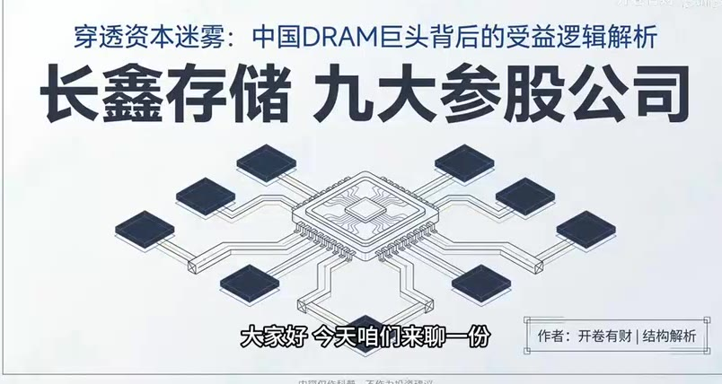
[00:03] 穿透资本迷雾：中国DRAM巨头背后的受益逻辑解析 / 长鑫存储九大参股公司 / 关于长鑫存储IPO / 作者：开卷有财结构解析
[00:06] 穿透资本迷雾：中国DRAM巨头背后的受益逻辑解析 / 长鑫存储九大参股公司 / 以及跟它有关的9家A股参股公司 / 作者：开卷有财结构解析
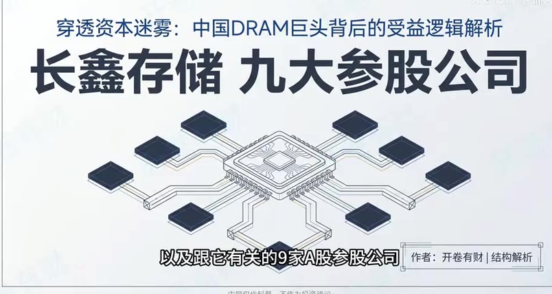
[00:09] 穿透资本迷雾：中国DRAM巨头背后的受益逻辑解析 / 长鑫存储九大参股公司 / 不做投资建议 / 作者：开卷有财结构解析
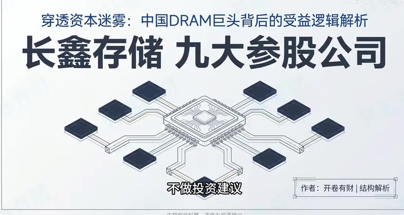
[00:12] 行业巨兽：长鑫科技的“炸裂”基本面 / +XX% / 业绩表现 / 2026Q1营收508亿|归母净利润247.62亿 / 单季盈利已超科创板605家公司总和 / 长鑫科技 / (CXMT) / IPO规模 / 拟募资295亿元 / 科创板史上第二大IPO，预计7月底至8月初挂牌 / 估值区间 / 估值区间8000亿-1.2万亿元 / 自主设计制造DRAM芯片的企业 / 25年末净资产约1700亿，PB5-7倍 / 内容仅作科普，不作为投资建议
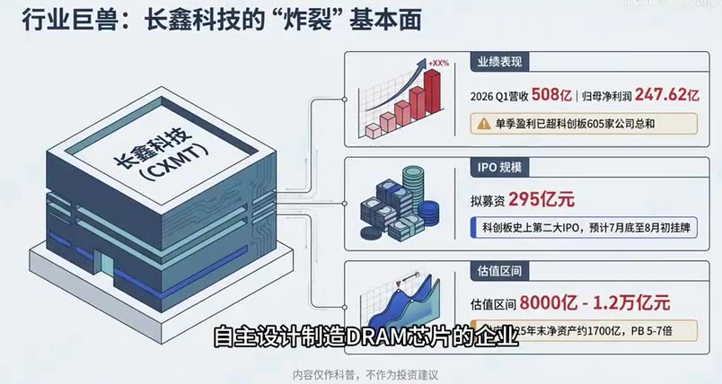
[00:15] 行业巨兽：长鑫科技的“炸裂”基本面 / +XX% / 业绩表现 / 2026Q1营收508亿|归母净利润247.62亿 / 单季盈利已超科创板605家公司总和 / 长鑫科技 / IPO规模 / (CXMT) / 拟募资295亿元 / 科创板史上第二大IPO，预计7月底至8月初挂牌 / 估值区间 / 估值区间8000亿-1.2万亿元 / 2026年一季度营收508亿 / 寸应2025年末净资产约1700亿，PB5-7倍 / 内容仅作科普，不作为投资建议
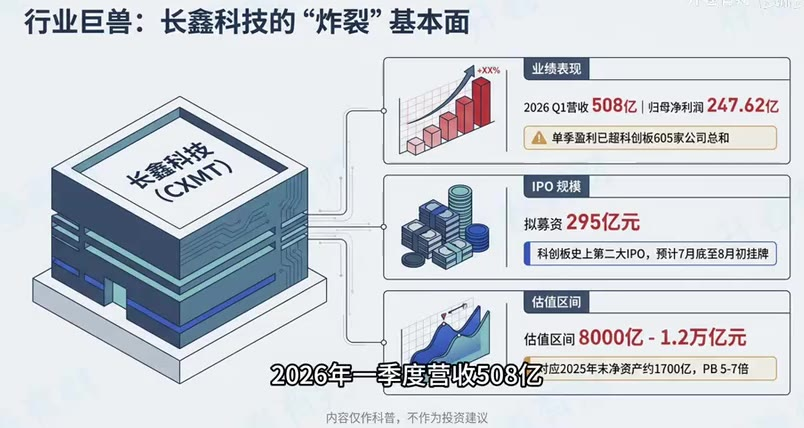
[00:18] 行业巨兽：长鑫科技的“炸裂”基本面 / +XX% / 业绩表现 / 2026Q1营收508亿|归母净利润247.62亿 / 单季盈利已超科创板605家公司总和 / 长鑫科技 / (CXMT) / IPO规模 / 拟募资295亿元 / 科创板史上第二大IPO，预计7月底至8月初挂牌 / 估值区间 / 估值区间8000亿-1.2万亿元 / 归母净利润247.62亿 / 对应2025年末净资产约1700亿，PB5-7倍 / 内容仅作科普，不作为投资建议
[00:21] 行业巨兽：长鑫科技的“炸裂”基本面 / +XX% / 业绩表现 / 2026Q1营收508亿|归母净利润247.62亿 / 单季盈利已超科创板605家公司总和 / 长鑫科技 / (CXMT) / IPO规模 / 拟募资295亿元 / 科创板史上第二大IPO，预计7月底至8月初挂牌 / 估值区间 / 估值区间8000亿-1.2万亿元 / 科创板605家公司的总和 / 对应2025年末净资产约1700亿，PB5-7倍 / 内容仅作科普，不作为投资建议
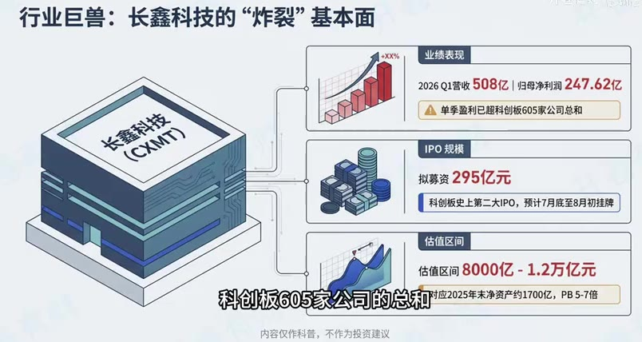
[00:24] 行业巨兽：长鑫科技的“炸裂”基本面 / +XX% / 业绩表现 / 2026Q1营收508亿|归母净利润247.62亿 / 单季盈利已超科创板605家公司总和 / 长鑫科技 / (CXMT) / IPO规模 / 拟募资295亿元 / 科创板史上第二大IPO，预计7月底至8月初挂牌 / 估值区间 / 估值区间8000亿-1.2万亿元 / 6月拿到注册批文 / 对应2025年末净资产约1700亿，PB5-7倍 / 内容仅作科普，不作为投资建议
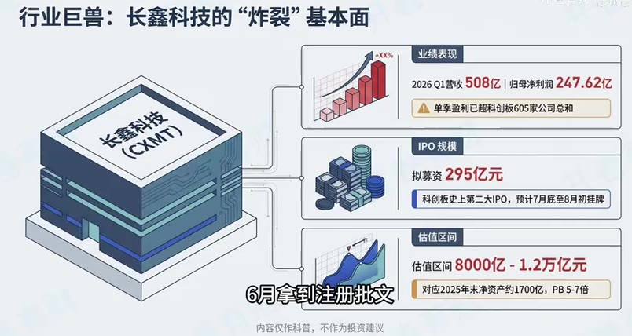
[00:27] 行业巨兽：长鑫科技的“炸裂”基本面 / +XX% / 业绩表现 / 2026Q1营收508亿|归母净利润247.62亿 / 单季盈利已超科创板605家公司总和 / 长鑫科技 / (CXMT) / IPO规模 / 拟募资295亿元 / 科创板史上第二大IPO，预计7月底至8月初挂牌 / 估值区间 / 估值区间8000亿-1.2万亿元 / 预计7月底8月初挂牌 / 对应2025年末净资产约1700亿，PB5-7倍 / 内容仅作科普，不作为投资建议
[00:30] 行业巨兽：长鑫科技的“炸裂”基本面 / +XX% / 业绩表现 / 2026Q1营收508亿|归母净利润247.62亿 / 单季盈利已超科创板605家公司总和 / 长鑫科技 / IPO规模 / (CXMT) / 拟募资295亿元 / 科创板史上第二大IPO，预计7月底至8月初挂牌 / 估值区间 / 估值区间8000亿-1.2万亿元 / 亿到12，000亿之间 / 对应2025年末净资产约1700亿，PB5-7倍 / 内容仅作科普，不作为投资建议
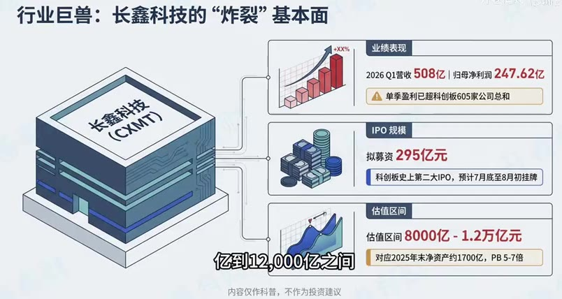
[00:33] 行业巨兽：长鑫科技的“炸裂”基本面 / +XX% / 业绩表现 / 2026Q1营收508亿|归母净利润247.62亿 / 单季盈利已超科创板605家公司总和 / 长鑫科技 / (CXMT) / IPO规模 / 拟募资295亿元 / 科创板史上第二大IPO，预计7月底至8月初挂牌 / 估值区间 / 估值区间8000亿-1.2万亿元 / 市净率5-7倍 / 对应2025年末净资产约1700亿，PB5-7倍 / 内容仅作科普，不作为投资建议
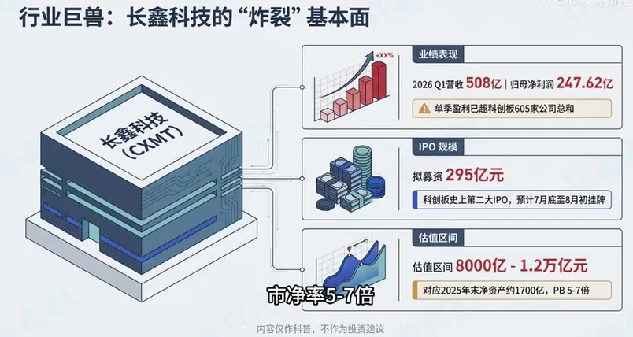
[00:36] 游戏规则：为什么 / “间接参股”要打折？ / 长鑫科技增值1.00元 / 长鑫科技增值1.00元 / 投资A股参股公司，不能 / LP份额折算 / 简单理解为“买股票等升 / 基金管理费用 / 直接持股拥有极高信息透 / 明度与100%价值传导；间 / 接持股面临天然的“多层 / 管理公司Carry分成 / 穿透损耗”及基金退出节 / 奏的不确定性。 / 上市公司账面1.00元 / 但是参股长鑫的A股公司 / 内容仅作科普，不作为投资建议
[00:39] 游戏规则：为什么 / “间接参股”要打折？ / 长鑫科技增值1.00元 / 长鑫科技增值1.00元 / 投资A股参股公司，不能 / LP份额折算 / 简单理解为“买股票等升 / 基金管理费用 / 直接持股拥有极高信息透 / 明度与100%价值传导；间 / 接持股面临天然的“多层 / 管理公司Carry分成 / 穿透损耗”及基金退出节 / 奏的不确定性。 / 上市公司账面1.00元 / 不能简单理解成买股票等升值 / 内容仅作科普，不作为投资建议
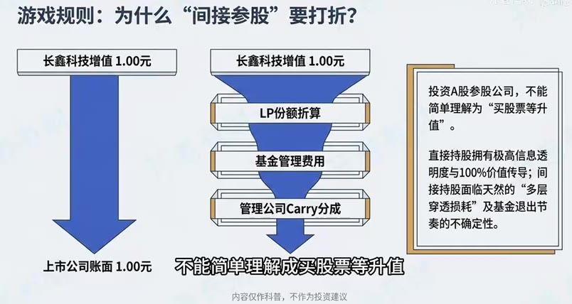
[00:42] 游戏规则：为什么 / “间接参股”要打折？ / 长鑫科技增值1.00元 / 长鑫科技增值1.00元 / 投资A股参股公司，不能 / LP份额折算 / 简单理解为“买股票等升 / 基金管理费用 / 直接持股拥有极高信息透 / 明度与100%价值传导；间 / 接持股面临天然的“多层 / 管理公司Carry分成 / 穿透损耗”及基金退出节 / 奏的不确定性。 / 上市公司账面1.00元 / 比例不同 / 内容仅作科普，不作为投资建议
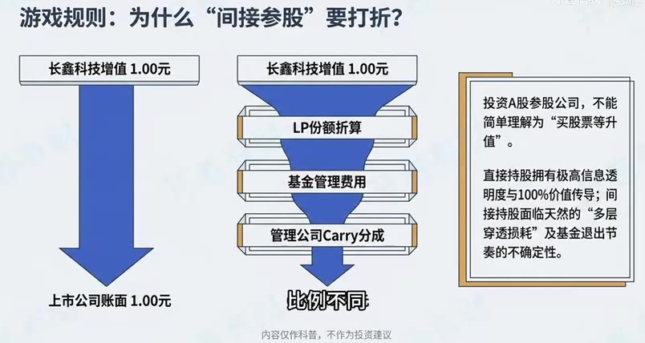
[00:45] 游戏规则：为什么 / “间接参股”要打折？ / 长鑫科技增值1.00元 / 长鑫科技增值1.00元 / 投资A股参股公司，不能 / LP份额折算 / 简单理解为“买股票等升 / 基金管理费用 / 直接持股拥有极高信息透 / 明度与100%价值传导；间 / 接持股面临天然的“多层 / 管理公司Carry分成 / 穿透损耗”及基金退出节 / 奏的不确定性。 / 上市公司账面1.00元 / 得一家·家拆开看 / 内容仅作科普，不作为投资建议
[00:48] 游戏规则：为什么 / “间接参股”要打折？ / 长鑫科技增值1.00元 / 长鑫科技增值1.00元 / 投资A股参股公司，不能 / LP份额折算 / 简单理解为“买股票等升 / 基金管理费用 / 直接持股拥有极高信息透 / 明度与100%价值传导；间 / 接持股面临天然的“多层 / 管理公司Carry分成 / 穿透损耗”及基金退出节 / 奏的不确定性。 / 上市公司账面1.00元 / 股东60多家 / 内容仅作科普，不作为投资建议
[00:51] 游戏规则：为什么 / “间接参股”要打折？ / 长鑫科技增值1.00元 / 长鑫科技增值1.00元 / 投资A股参股公司，不能 / LP份额折算 / 简单理解为“买股票等升 / 基金管理费用 / 直接持股拥有极高信息透 / 明度与100%价值传导；间 / 接持股面临天然的“多层 / 管理公司Carry分成 / 穿透损耗”及基金退出节 / 奏的不确定性。 / 上市公司账面1.00元 / 核心股东是合肥国资大基金二期 / 内容仅作科普，不作为投资建议
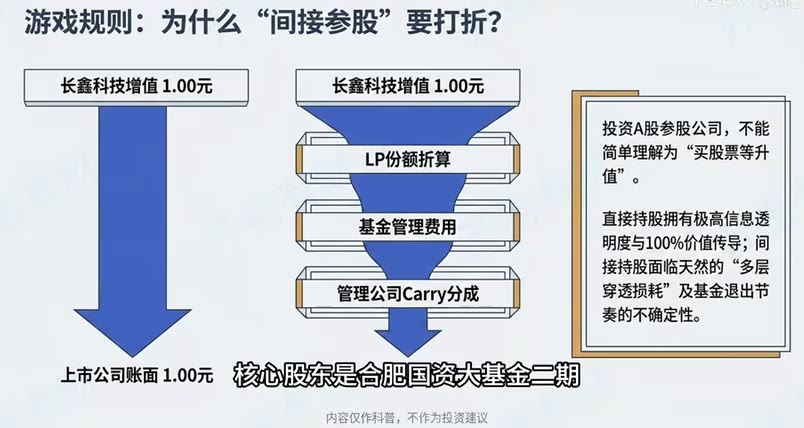
[00:54] 游戏规则：为什么 / “间接参股”要打折？ / 长鑫科技增值1.00元 / 长鑫科技增值1.00元 / 投资A股参股公司，不能 / LP份额折算 / 简单理解为“买股票等升 / 基金管理费用 / 直接持股拥有极高信息透 / 明度与100%价值传导；间 / 接持股面临天然的“多层 / 管理公司Carry分成 / 穿透损耗”及基金退出节 / 奏的不确定性。 / 上市公司账面1.00元 / 还有产业链资本和创投 / 内容仅作科普，不作为投资建议
[00:57] 游戏规则：为什么 / “间接参股”要打折？ / 长鑫科技增值1.00元 / 长鑫科技增值1.00元 / 投资A股参股公司，不能 / LP份额折算 / 简单理解为“买股票等升 / 基金管理费用 / 直接持股拥有极高信息透 / 明度与100%价值传导；间 / 接持股面临天然的“多层 / 管理公司Carry分成 / 穿透损耗”及基金退出节 / 奏的不确定性。 / 上市公司账面1.00元 / 弹性最大 / 内容仅作科普，不作为投资建议
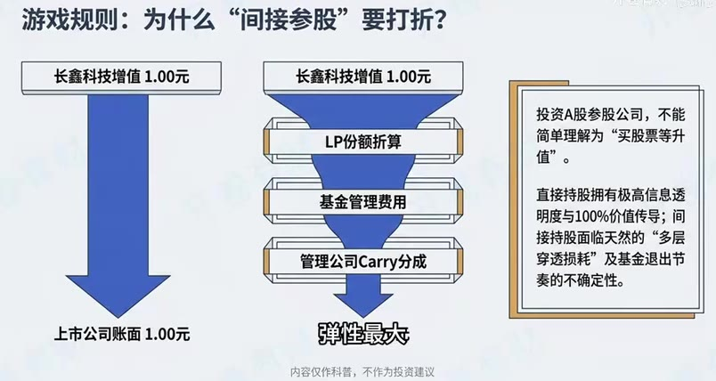
[01:00] 游戏规则：为什么 / “间接参股”要打折？ / 长鑫科技增值1.00元 / 长鑫科技增值1.00元 / 投资A股参股公司，不能 / LP份额折算 / 简单理解为“买股票等升 / 基金管理费用 / 直接持股拥有极高信息透 / 明度与100%价值传导；间 / 接持股面临天然的“多层 / 管理公司Carry分成 / 穿透损耗”及基金退出节 / 奏的不确定性。 / 上市公司账面1.00元 / 兆易创新和美的集团 / 内容仅作科普，不作为投资建议
[01:03] 游戏规则：为什么 / “间接参股”要打折？ / 长鑫科技增值1.00元 / 长鑫科技增值1.00元 / 投资A股参股公司，不能 / LP份额折算 / 简单理解为“买股票等升 / 基金管理费用 / 直接持股拥有极高信息透 / 明度与100%价值传导；间 / 接持股面临天然的“多层 / 管理公司Carry分成 / 穿透损耗”及基金退出节 / 奏的不确定性。 / 上市公司账面1.00元 / 中间有基金费用 / 内容仅作科普，不作为投资建议
[01:06] 游戏规则：为什么 / “间接参股”要打折？ / 长鑫科技增值1.00元 / 长鑫科技增值1.00元 / 投资A股参股公司，不能 / LP份额折算 / 简单理解为“买股票等升 / 基金管理费用 / 直接持股拥有极高信息透 / 明度与100%价值传导；间 / 接持股面临天然的“多层 / 管理公司Carry分成 / 穿透损耗”及基金退出节 / 奏的不确定性。 / 上市公司账面1.00元 / 估值传导会有损耗 / 内容仅作科普，不作为投资建议
[01:09] 游戏规则：为什么 / “间接参股”要打折？ / 长鑫科技增值1.00元 / 长鑫科技增值1.00元 / 投资A股参股公司，不能 / LP份额折算 / 简单理解为“买股票等升 / 基金管理费用 / 直接持股拥有极高信息透 / 明度与100%价值传导；间 / 接持股面临天然的“多层 / 管理公司Carry分成 / 穿透损耗”及基金退出节 / 奏的不确定性。 / 上市公司账面1.00元 / 另外锁定期也关键 / 内容仅作科普，不作为投资建议
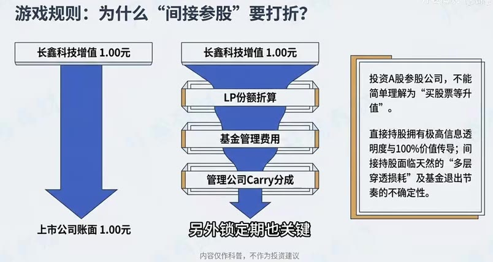
[01:12] 游戏规则：为什么 / “间接参股”要打折？ / 长鑫科技增值1.00元 / 长鑫科技增值1.00元 / 投资A股参股公司，不能 / LP份额折算 / 简单理解为“买股票等升 / 基金管理费用 / 直接持股拥有极高信息透 / 明度与100%价值传导；间 / 接持股面临天然的“多层 / 管理公司Carry分成 / 穿透损耗”及基金退出节 / 奏的不确定性。 / 上市公司账面1.00元 / 间接退出节奏看基金管理人 / 内容仅作科普，不作为投资建议
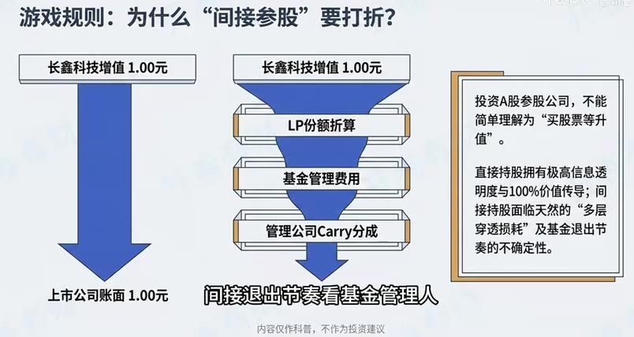
[01:15] 游戏规则：为什么 / “间接参股”要打折？ / 长鑫科技增值1.00元 / 长鑫科技增值1.00元 / 投资A股参股公司，不能 / LP份额折算 / 简单理解为“买股票等升 / 基金管理费用 / 直接持股拥有极高信息透 / 明度与100%价值传导；间 / 接持股面临天然的“多层 / 管理公司Carry分成 / 穿透损耗”及基金退出节 / 奏的不确定性。 / 上市公司账面1.00元 / 纸面富贵能不能及时兑现 / 内容仅作科普，不作为投资建议
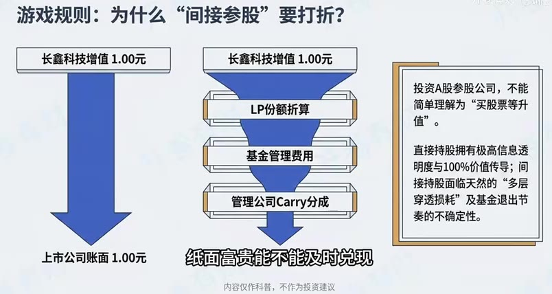
[01:18] NO. / 合百集团（000417） / 2025营收：66.96亿 / 4.83% / 扣非净利：2791万79.58% / 间接持股：约0.08%（出资4.5亿） / 产业基金 / 主业盈利薄如纸片（扣非暴跌79%），零售主业与半导体毫无战略协同。这笔投资 / 资属于纯粹财务投资，面临多层穿透损耗。长鑫IPO的估值增值大概率只够“遮 / 丑”（对冲主业亏捐自们按蔓程度从低到高来排 / 内容仅作科普，不作为投资建议
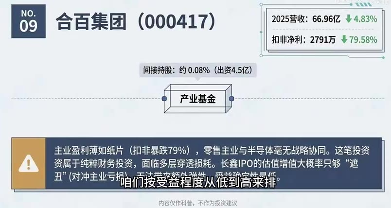
[01:21] NO. / 合百集团（000417） / 2025营收：66.96亿 / 4.83% / 扣非净利：2791万↓79.58% / 间接持股：约0.08%（出资4.5亿） / 产业基金 / 主业盈利薄如纸片（扣非暴跌79%），零售主业与半导体毫无战略协同。这笔投资 / 资属于纯粹财务投资，面临多层穿透损耗。长鑫IPO的估值增值大概率只够“遮 / 丑”（对冲主业亏损），无法带来额外弹性。受益确定性最低。 / 内容仅作科普，不作为投资建议
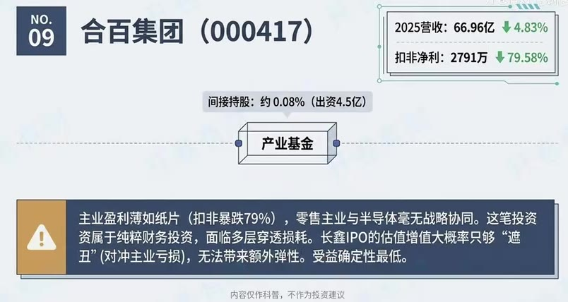
[01:24] NO. / 合百集团（000417） / 2025营收：66.96亿 / 4.83% / 扣非净利：2791万 / 79.58% / 间接持股：约0.08%（出资4.5亿） / 产业基金 / 主业盈利薄如纸片（扣非暴跌79%），零售主业与半导体毫无战略协同。这笔投资 / 资属于纯粹财务投资，面临多层穿透损耗。长鑫IPO的估值增值大概率只够“遮 / 内容仅作科普，不作为投资建议
[01:27] NO. / 合百集团（000417） / 2025营收：66.96亿 / 4.83% / 扣非净利：2791万 / 79.58% / 间接持股：约0.08%（出资4.5亿） / 产业基金 / 主业盈利薄如纸片（扣非暴跌79%），零售主业与半导体毫无战略协同。这笔投资 / 资属于纯粹财务投资，面临多层穿透损耗。长鑫IPO的估值增值大概率只够“遮 / 丑（对冲主业亏损），无法带来弹 / 内容仅作科普，不作为投资建议
[01:30] NO. / 合百集团（000417） / 2025营收：66.96亿 / 4.83% / 扣非净利：2791万 / 79.58% / 间接持股：约0.08%（出资4.5亿） / 产业基金 / 主业盈利薄如纸片（扣非暴跌79%），零售主业与半导体毫无战略协同。这笔投资 / 资属于纯粹财务投资，面临多层穿透损耗。长鑫IPO的估值增值大概率只够“遮 / 内容仅作科普，不作为投资建议
[01:33] NO. / 合百集团（000417） / 2025营收：66.96亿 / 4.83% / 扣非净利：2791万 / 79.58% / 间接持股：约0.08%（出资4.5亿） / 产业基金 / 主业盈利薄如纸片（扣非暴跌79%），零售主业与半导体毫无战略协同。这笔投资 / 资属于纯粹财务投资，面临多层穿透损耗。长鑫IPO的估值增值大概率只够“遮 / 丑”（对冲主业亏损），菲净利只有2，791方 / 牲最低。 / 内容仅作科普，不作为投资建议
[01:36] NO. / 合百集团（000417） / 2025营收：66.96亿 / 4.83% / 扣非净利：2791万 / 79.58% / 间接持股：约0.08%（出资4.5亿） / 产业基金 / 主业盈利薄如纸片（扣非暴跌79%），零售主业与半导体毫无战略协同。这笔投资 / 资属于纯粹财务投资，面临多层穿透损耗。长鑫IPO的估值增值大概率只够“遮 / 丑”（对冲主业亏损），无法业基举不赚钱 / 处单性 / 定性最低。 / 内容仅作科普，不作为投资建议
[01:39] NO. / 合百集团（000417） / 2025营收：66.96亿 / 4.83% / 扣非净利：2791万 / 79.58% / 间接持股：约0.08%（出资4.5亿） / 产业基金 / 主业盈利薄如纸片（扣非暴跌79%），零售主业与半导体毫无战略协同。这笔投资 / 资属于纯粹财务投资，面临多层穿透损耗。长鑫IPO的估值增值大概率只够“遮 / 丑”（对冲主业亏损），无施通基鉴出资砖性最低。 / 内容仅作科普，不作为投资建议
[01:42] NO. / 合百集团（000417） / 2025营收：66.96亿 / 4.83% / 扣非净利：2791万 / 79.58% / 间接持股：约0.08%（出资4.5亿） / 产业基金 / 主业盈利薄如纸片（扣非暴跌79%），零售主业与半导体毫无战略协同。这笔投资 / 资属于纯粹财务投资，面临多层穿透损耗。长鑫IPO的估值增值大概率只够“遮 / 丑”（对冲主业亏损），无法带来层折扣 / 益确定性最低。 / 内容仅作科普，不作为投资建议
[01:45] NO. / 合百集团（000417） / 2025营收：66.96亿 / 4.83% / 扣非净利：2791万 / 79.58% / 间接持股：约0.08%（出资4.5亿） / 产业基金 / 主业盈利薄如纸片（扣非暴跌79%），零售主业与半导体毫无战略协同。这笔投资 / 资属于纯粹财务投资，面临多层穿透损耗。长鑫IPO的估值增值大概率只够“遮 / 丑”（对冲主业亏损），无法带丧额处躁 / 基金结构有损耗 / 定性最低。 / 内容仅作科普，不作为投资建议
[01:48] NO. / 合百集团（000417） / 2025营收：66.96亿 / 4.83% / 扣非净利：2791万 / 79.58% / 间接持股：约0.08%（出资4.5亿） / 产业基金 / 主业盈利薄如纸片（扣非暴跌79%），零售主业与半导体毫无战略协同。这笔投资 / 资属于纯粹财务投资，面临多层穿透损耗。长鑫IPO的估值增值大概率只够“遮 / 丑”（对冲主业亏损），投费收益只能对冲号损 / 最低。 / 内容仅作科普，不作为投资建议
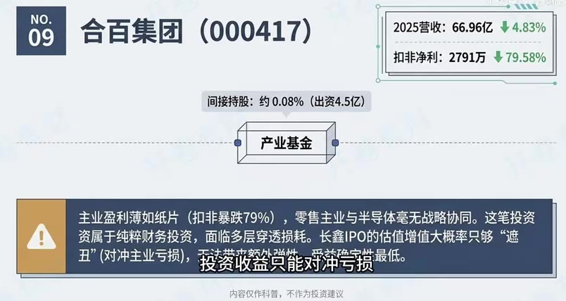
[01:51] NO. / 合百集团（000417） / 2025营收：66.96亿 / 4.83% / 扣非净利：2791万 / 79.58% / 间接持股：约0.08%（出资4.5亿） / 产业基金 / 主业盈利薄如纸片（扣非暴跌79%），零售主业与半导体毫无战略协同。这笔投资 / 资属于纯粹财务投资，面临多层穿透损耗。长鑫IPO的估值增值大概率只够“遮 / 内容仅作科普，不作为投资建议
[01:54] NO. / 朗迪集团（603726） / 主营：空调风叶/风机 / 2025营收：18.23亿3.74% / 归母净利：1.77亿 / ↑3% / 间接持股：约0.066%（出资8000万）-全场垫底 / 燕创德鑫创投 / 受制于“体量×比例”双重限制。存量竞争的传统主业与半导体无产业协同。按 / 1万亿估值算，对应份额约6.6亿，虽有8倍账面回报，但扣除穿透损耗和退出时 / 间表后，对基本面的改善 / 第八名朗迪集闭 / 内容仅作科普，不作为投资建议
[01:57] NO. / 朗迪集团（603726） / 主营：空调风叶/风机 / 2025营收：18.23亿3.74% / 归母净利：1.77亿 / ↑3% / 间接持股：约0.066%（出资8000万）-全场垫底 / 燕创德鑫创投 / 受制于“体量×比例”双重限制。存量竞争的传统主业与半导体无产业协同。按 / 1万亿估值算，对应份额约6.6亿，虽有8倍账面回报，但扣除穿透损耗和退出时 / 内容仅作科普，不作为投资建议
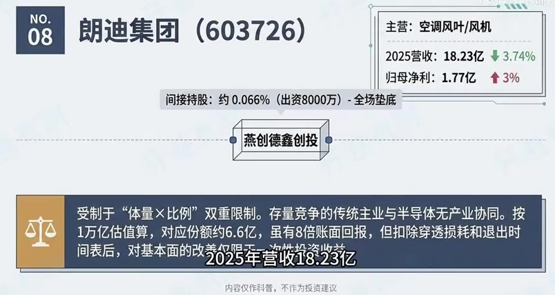
[02:00] NO. / 朗迪集团（603726） / 主营：空调风叶/风机 / 2025营收：18.23亿3.74% / 归母净利：1.77亿 / 3% / 间接持股：约0.066%（出资8000万）-全场垫底 / 燕创德鑫创投 / 受制于“体量×比例”双重限制。存量竞争的传统主业与半导体无产业协同。按 / 1万亿估值算，对应份额约6.6亿，虽有8倍账面回报，但扣除穿透损耗和退出时 / 内容仅作科普，不作为投资建议
[02:03] NO. / 朗迪集团（603726） / 主营：空调风叶/风机 / 2025营收：18.23亿3.74% / 归母净利：1.77亿 / 3% / 间接持股：约0.066%（出资8000万）-全场垫底 / 燕创德鑫创投 / 受制于“体量×比例”双重限制。存量竞争的传统主业与半导体无产业协同。按 / 1万亿估值算，对应份额约6.6亿，虽有8倍账面回报，但扣除穿透损耗和退出时 / 内容仅作科普，不作为投资建议
[02:06] NO. / 朗迪集团（603726） / 主营：空调风叶/风机 / 2025营收：18.23亿3.74% / 归母净利：1.77亿 / 3% / 间接持股：约0.066%（出资8000万）-全场垫底 / 燕创德鑫创投 / 受制于“体量×比例”双重限制。存量竞争的传统主业与半导体无产业协同。按 / 1万亿估值算，对应份额约6.6亿，虽有8倍账面回报，但扣除穿透损耗和退出时 / 间表后，对基本面的 / 穿透后只占长鑫约.066% / 内容仅作科普，不作为投资建议
[02:09] NO. / 朗迪集团（603726） / 主营：空调风叶/风机 / 2025营收：18.23亿3.74% / 归母净利：1.77亿 / 3% / 间接持股：约0.066%（出资8000万）-全场垫底 / 燕创德鑫创投 / 受制于“体量×比例”双重限制。存量竞争的传统主业与半导体无产业协同。按 / 1万亿估值算，对应份额约6.6亿，虽有8倍账面回报，但扣除穿透损耗和退出时 / 间表后，对基本面的 / 穿透后只占长鑫约.066% / 内容仅作科普，不作为投资建议
[02:12] NO. / 朗迪集团（603726） / 主营：空调风叶/风机 / 2025营收：18.23亿3.74% / 归母净利：1.77亿 / ↑3% / 间接持股：约0.066%（出资8000万）-全场垫底 / 燕创德鑫创投 / 受制于“体量×比例”双重限制。存量竞争的传统主业与半导体无产业协同。按 / 1万亿估值算，对应份额约6.6亿，虽有8倍账面回报，但扣除穿透损耗和退出时 / 间表后，对基本面的改善仅量尔例益。 / 内容仅作科普，不作为投资建议
[02:15] NO. / 朗迪集团（603726） / 主营：空调风叶/风机 / 2025营收：18.23亿3.74% / 归母净利：1.77亿 / ↑3% / 间接持股：约0.066%（出资8000万）-全场垫底 / 燕创德鑫创投 / 受制于“体量×比例”双重限制。存量竞争的传统主业与半导体无产业协同。按 / 1万亿估值算，对应份额约6.6亿，虽有8倍账面回报，但扣除穿透损耗和退出时 / 内容仅作科普，不作为投资建议
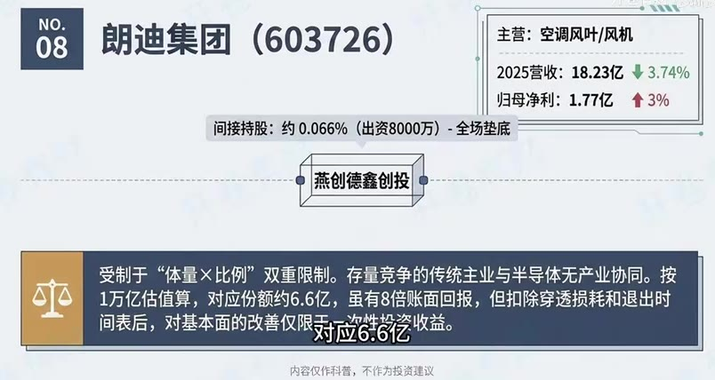
[02:18] NO. / 朗迪集团（603726） / 主营：空调风叶/风机 / 2025营收：18.23亿3.74% / 归母净利：1.77亿 / 3% / 间接持股：约0.066%（出资8000万）-全场垫底 / 燕创德鑫创投 / 受制于“体量×比例”双重限制。存量竞争的传统主业与半导体无产业协同。按 / 1万亿估值算，对应份额约6.6亿，虽有8倍账面回报，但扣除穿透损耗和退出时 / 内容仅作科普，不作为投资建议
[02:21] NO. / 朗迪集团（603726） / 主营：空调风叶/风机 / 2025营收：18.23亿3.74% / 归母净利：1.77亿 / 3% / 间接持股：约0.066%（出资8000万）-全场垫底 / 燕创德鑫创投 / 受制于“体量×比例”双重限制。存量竞争的传统主业与半导体无产业协同。按 / 1万亿估值算，对应份额约6.6亿，虽有8倍账面回报，但扣除穿透损耗和退出时 / 间表后，对基本面的改差跟半等浚物同 / 内容仅作科普，不作为投资建议
[02:24] NO.07 / 合肥城建（002208） / 2025营收：101 / 归母净利：亏损 / 持股 / 母公司（合肥建投） / 21.67% / 间接持股 / 上市公司 / （出资仅6000万） / 典型的情绪驱动型“概念标的”。虽然母公司是长鑫第一大股东，但上市公司本身有效持 / 乎其微，且多次澄清无业务往来。在主业深陷地产下行周期（亏损5.21亿）背景下，600 / 间接出资对利润表可谓杯水车薪 / 第7名合肥城建 / 内容仅作科普，不作为投资建议
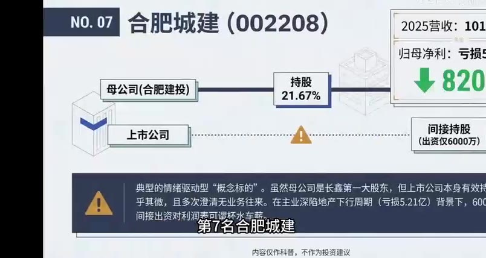
[02:27] NO.07 / 合肥城建（002208） / 2025营收：101.02亿 / 归母净利：亏损5.21亿 / 820% / 持股 / 母公司（合肥建投） / 21.67% / 间接持股 / 上市公司 / （出资仅6000万） / 典型的情绪驱动型“概念标的”。虽然母公司是长鑫第一大股东，但上市公司本身有效持股微 / 乎其微，且多次澄清无业务往来。在主业深陷地产下行周期（亏损5.21亿）背景下，6000万的 / 间接出资对利润表可谓杯水车薪 / 安徽省属房企 / 内容仅作科普，不作为投资建议
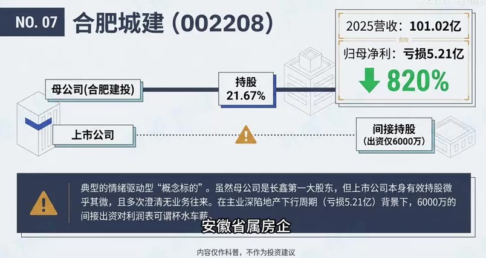
[02:30] NO.07 / 合肥城建（002208） / 2025营收：101.02亿 / 归母净利：亏损5.21亿 / 820% / 持股 / 母公司（合肥建投） / 21.67% / 间接持股 / 上市公司 / （出资仅6000万） / 典型的情绪驱动型“概念标的”。虽然母公司是长鑫第一大股东，但上市公司本身有效持股微 / 乎其微，且多次澄清无业务往来。在主业深陷地产下行周期（亏损5.21亿）背景下，6000万的 / 间接出资对利润表可谓杯水车薪 / 增长31.26% / 内容仅作科普，不作为投资建议
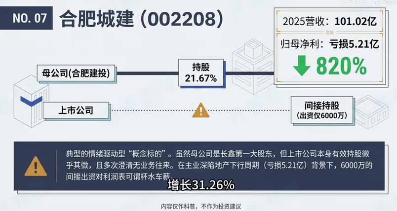
[02:33] NO.07 / 合肥城建（002208） / 2025营收：101.02亿 / 归母净利：亏损5.21亿 / 820% / 持股 / 母公司（合肥建投） / 21.67% / 间接持股 / 上市公司 / （出资仅6000万） / 典型的情绪驱动型“概念标的”。虽然母公司是长鑫第一大股东，但上市公司本身有效持股微 / 乎其微，且多次澄清无业务往来。在主业深陷地产下行周期（亏损5.21亿）背景下，6000万的 / 间接出资对利润表可谓杯水车薪 / 但归母净利亏损5.21亿大跌820% / 内容仅作科普，不作为投资建议
[02:36] NO.07 / 合肥城建（002208） / 2025营收：101.02亿 / 归母净利：亏损5.21亿 / 820% / 持股 / 母公司（合肥建投） / 21.67% / 间接持股 / 上市公司 / （出资仅6000万） / 典型的情绪驱动型“概念标的”。虽然母公司是长鑫第一大股东，但上市公司本身有效持股微 / 乎其微，且多次澄清无业务往来。在主业深陷地产下行周期（亏损5.21亿）背景下，6000万的 / 间接出资对利润表可谓杯水车薪 / 但归母净利亏损5.21亿大跌820% / 内容仅作科普，不作为投资建议
[02:39] NO.07 / 合肥城建（002208） / 2025营收：101.02亿 / 归母净利：亏损5.21亿 / 820% / 持股 / 母公司（合肥建投） / 21.67% / 间接持股 / 上市公司 / （出资仅6000万） / 典型的情绪驱动型“概念标的”。虽然母公司是长鑫第一大股东，但上市公司本身有效持股微 / 乎其微，且多次澄清无业务往来。在主业深陷地产下行周期（亏损5.21亿）背景下，6000万的 / 间接出资对利润表可谓杯水车薪 / 谷肥建投是长鑫第一大股东 / 内容仅作科普，不作为投资建议
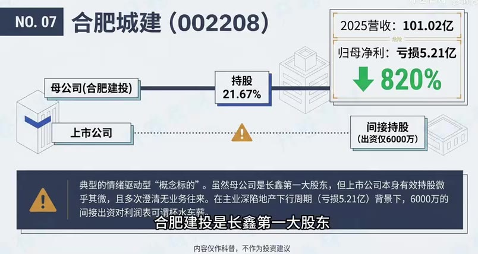
[02:42] NO.07 / 合肥城建（002208） / 2025营收：101.02亿 / 归母净利：亏损5.21亿 / 820% / 持股 / 母公司（合肥建投） / 21.67% / 间接持股 / 上市公司 / （出资仅6000万） / 典型的情绪驱动型“概念标的”。虽然母公司是长鑫第一大股东，但上市公司本身有效持股微 / 乎其微，且多次澄清无业务往来。在主业深陷地产下行周期（亏损5.21亿）背景下，6000万的 / 间接出资对利润表可谓杯水车葬 / 通过基金出了6，000万 / 内容仅作科普，不作为投资建议
[02:45] NO.07 / 合肥城建（002208） / 2025营收：101.02亿 / 归母净利：亏损5.21亿 / 820% / 持股 / 母公司（合肥建投） / 21.67% / 间接持股 / 上市公司 / （出资仅6000万） / 典型的情绪驱动型“概念标的”。虽然母公司是长鑫第一大股东，但上市公司本身有效持股微 / 乎其微，且多次澄清无业务往来。在主业深陷地产下行周期（亏损5.21亿）背景下，6000万的 / 间接出资对利润表可谓杯水车薪 / 市场曾经把它当成星概念龙头炒 / 内容仅作科普，不作为投资建议
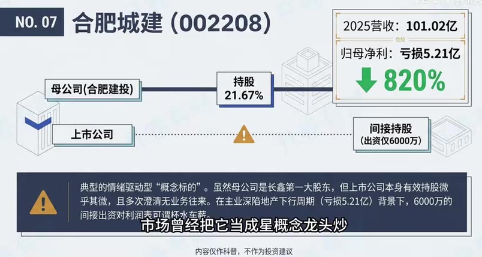
[02:48] NO.07 / 合肥城建（002208） / 2025营收：101.02亿 / 归母净利：亏损5.21亿 / 820% / 持股 / 母公司（合肥建投） / 21.67% / 间接持股 / 上市公司 / （出资仅6000万） / 典型的情绪驱动型“概念标的”。虽然母公司是长鑫第一大股东，但上市公司本身有效持股微 / 乎其微，且多次澄清无业务往来。在主业深陷地产下行周期（亏损5.21亿）背景下，6000万的 / 间接出资对利润表可谓杯水车鞋 / 但公司多次澄清没有业务往来 / 内容仅作科普，不作为投资建议
[02:51] NO.07 / 合肥城建（002208） / 2025营收：101.02亿 / 归母净利：亏损5.21亿 / 820% / 持股 / 母公司（合肥建投） / 21.67% / 间接持股 / 上市公司 / （出资仅6000万） / 典型的情绪驱动型“概念标的”。虽然母公司是长鑫第一大股东，但上市公司本身有效持股微 / 乎其微，且多次澄清无业务往来。在主业深陷地产下行周期（亏损5.21亿）背景下，6000万的 / 间接出资对利润表可谓杯水车薪 / 说白了就是情绪驱动 / 内容仅作科普，不作为投资建议
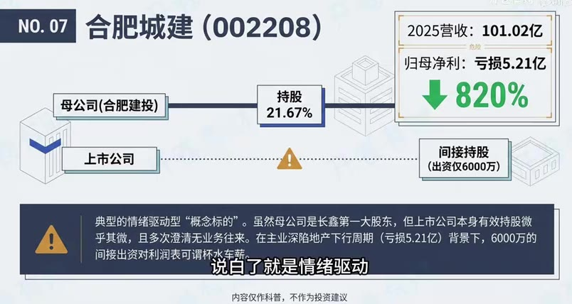
[02:54] NO.07 / 合肥城建（002208） / 2025营收：101.02亿 / 归母净利：亏损5.21亿 / 820% / 持股 / 母公司（合肥建投） / 21.67% / 间接持股 / 上市公司 / （出资仅6000万） / 典型的情绪驱动型“概念标的”。虽然母公司是长鑫第一大股东，但上市公司本身有效持股微 / 乎其微，且多次澄清无业务往来。在主业深陷地产下行周期（亏损5.21亿）背景下，6000万的 / 间接出资对利润表可谓杯水车薪 / 6，000万基金增值根本填不上 / 内容仅作科普，不作为投资建议
[02:57] NO.07 / 合肥城建（002208） / 2025营收：101.02亿 / 归母净利：亏损5.21亿 / 820% / 持股 / 母公司（合肥建投） / 21.67% / 间接持股 / 上市公司 / （出资仅6000万） / 典型的情绪驱动型“概念标的”。虽然母公司是长鑫第一大股东，但上市公司本身有效持股微 / 乎其微，且多次澄清无业务往来。在主业深陷地产下行周期（亏损5.21亿）背景下，6000万的 / 间接出资对利润表可谓杯水车薪 / 基本面关联很弱 / 内容仅作科普，不作为投资建议
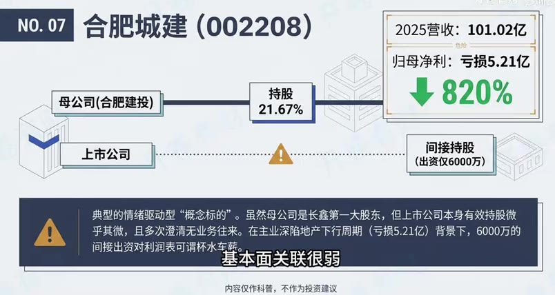
[03:00] NO. / 正帆科技 / 支（688596） / 主营：泛半导体介质系统 / 2025营收：49.16亿 / 归母净利：1.36亿 / 74.17% / 极低间接参股 / 核心业务绑定：厂务气化系统供应商（270亿采购盘） / 唯一具备“参股+供应链”双重身份的公司。间接持股比例极低，股权增值贡献有 / 限。真正的看点在于真实的业务供应关系一长鑫2026年超270亿的材料采购，能否 / 将正帆疲软的主业（净利暴跌74%）拉回增长轨道。 / 它是泛半导体工艺 / 内容仅作科普，不作为投资建议
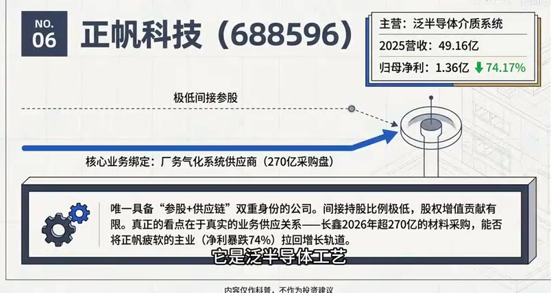
[03:03] NO. / 正帆科技 / 支（688596） / 主营：泛半导体介质系统 / 2025营收：49.16亿 / 归母净利：1.36亿 / 74.17% / 极低间接参股 / 核心业务绑定：厂务气化系统供应商（270亿采购盘） / 唯一具备“参股+供应链”双重身份的公司。间接持股比例极低，股权增值贡献有 / 限。真正的看点在于真实的业务供应关系一长鑫2026年超270亿的材料采购，能否 / 将正帆疲软的主业（净利暴跌74%）拉回增长轨道。 / 2025年营收49.16亿 / 内容仅作科普，不作为投资建议
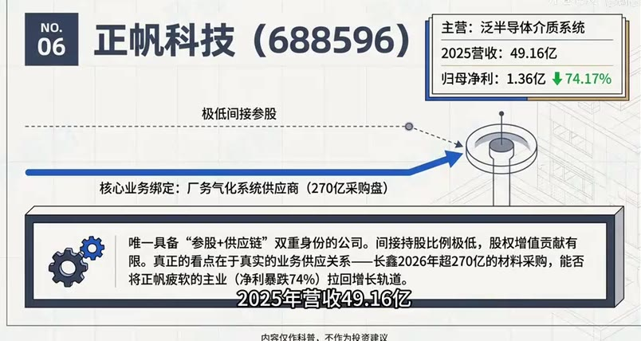
[03:06] NO. / 正帆科技 / 支（688596） / 主营：泛半导体介质系统 / 2025营收：49.16亿 / 归母净利：1.36亿 / 74.17% / 极低间接参股 / 核心业务绑定：厂务气化系统供应商（270亿采购盘） / 唯一具备“参股+供应链”双重身份的公司。间接持股比例极低，股权增值贡献有 / 限。真正的看点在于真实的业务供应关系一长鑫2026年超270亿的材料采购，能否 / 将正帆疲软的主业（净利暴跌74%）拉回增长轨道。 / 下降10.11% / 内容仅作科普， / 不作为投资建议
[03:09] NO. / 正帆科技 / 支（688596） / 主营：泛半导体介质系统 / 2025营收：49.16亿 / 归母净利：1.36亿 / 74.17% / 极低间接参股 / 核心业务绑定：厂务气化系统供应商（270亿采购盘） / 唯一具备“参股+供应链”双重身份的公司。间接持股比例极低，股权增值贡献有 / 限。真正的看点在于真实的业务供应关系一长鑫2026年超270亿的材料采购，能否 / 将正帆疲软的主业（净利暴跌74%）拉回增长轨道。 / 暴跌74.17% / 内容仅作科普，不作为投资建议
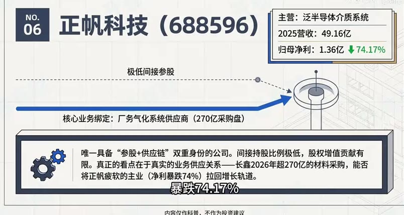
[03:12] NO. / 正帆科技 / 支（688596） / 主营：泛半导体介质系统 / 2025营收：49.16亿 / 归母净利：1.36亿74.17% / 极低间接参股 / 核心业务绑定：厂务气化系统供应商（270亿采购盘） / 唯一具备“参股+供应链”双重身份的公司。间接持股比例极低，股权增值贡献有 / 限。真正的看点在于真实的业务供应关系一长鑫2026年超270亿的材料采购，能否 / 将正帆疲软的主业（净利暴跌74%）拉回增长轨道。 / 同时也有真实业务供应 / 内容仅作科普，不作为投资建议
[03:15] NO. / 正帆科技 / 支（688596） / 主营：泛半导体介质系统 / 2025营收：49.16亿 / 归母净利：1.36亿74.17% / 极低间接参股 / 核心业务绑定：厂务气化系统供应商（270亿采购盘） / 唯一具备“参股+供应链”双重身份的公司。间接持股比例极低，股权增值贡献有 / 限。真正的看点在于真实的业务供应关系一长鑫2026年超270亿的材料采购，能否 / 将正帆疲软的主业（净利暴跌74%）拉回增长轨道。 / 给长鑫提供气化系统 / 内容仅作科普，不作为投资建议
[03:18] NO. / 正帆科技 / 支（688596） / 主营：泛半导体介质系统 / 2025营收：49.16亿 / 归母净利：1.36亿74.17% / 极低间接参股 / 核心业务绑定：厂务气化系统供应商（270亿采购盘） / 唯一具备“参股+供应链”双重身份的公司。间接持股比例极低，股权增值贡献有 / 限。真正的看点在于真实的业务供应关系一长鑫2026年超270亿的材料采购，能否 / 将正帆疲软的主业（净利暴跌74%）拉回增长轨道。 / 参股叉有供应链关系的 / 内容仅作科普，不作为投资建议
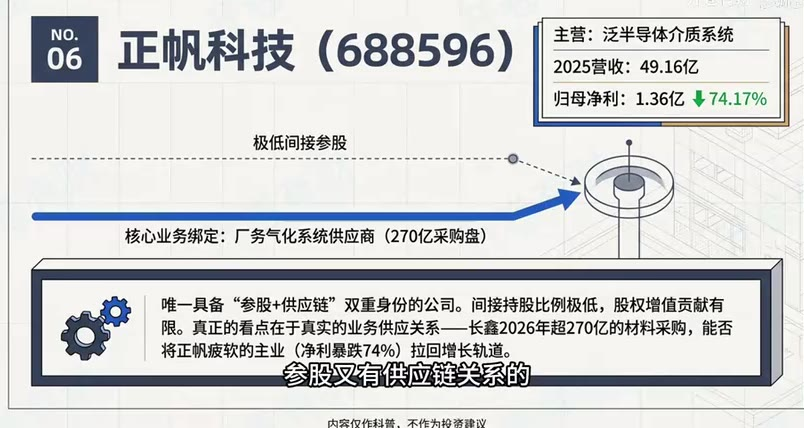
[03:21] NO. / 正帆科技 / 支（688596） / 主营：泛半导体介质系统 / 2025营收：49.16亿 / 归母净利：1.36亿74.17% / 极低间接参股 / 核心业务绑定：厂务气化系统供应商（270亿采购盘） / 唯一具备“参股+供应链”双重身份的公司。间接持股比例极低，股权增值贡献有 / 限。真正的看点在于真实的业务供应关系一长鑫2026年超270亿的材料采购，能否 / 将正帆疲软的主业（净利暴跌74%）拉回增长轨道。 / 但公司自身基本面偏弱 / 内容仅作科普，不作为投资建议
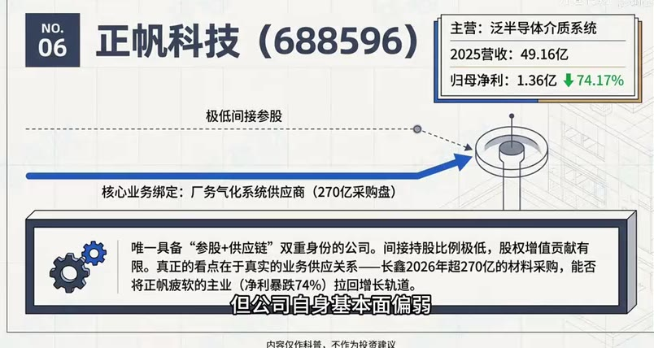
[03:24] NO. / 正帆科技 / 支（688596） / 主营：泛半导体介质系统 / 2025营收：49.16亿 / 归母净利：1.36亿74.17% / 极低间接参股 / 核心业务绑定：厂务气化系统供应商（270亿采购盘） / 唯一具备“参股+供应链”双重身份的公司。间接持股比例极低，股权增值贡献有 / 限。真正的看点在于真实的业务供应关系一长鑫2026年超270亿的材料采购，能否 / 将正帆疲软的主业（净利暴跌74%）拉回增长轨道。 / 股权增值贡献有限 / 内容仅作科普，不作为投资建议
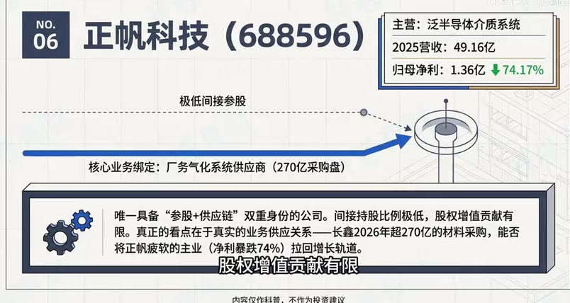
[03:27] NO. / 正帆科技 / （688596） / 主营：泛半导体介质系统 / 2025营收：49.16亿 / 归母净利：1.36亿 / 74.17% / 极低间接参股 / 核心业务绑定：厂务气化系统供应商（270亿采购盘） / 唯一具备“参股+供应链”双重身份的公司。间接持股比例极低，股权增值贡献有 / 限。真正的看点在于真实的业务供应关系一长鑫2026年超270亿的材料采购，能否 / 将正帆疲软的主业（净利暴跌74%）拉回增长轨道。 / 真正看点在于长鑫上市后的产能 / 内容仅作科普，不作为投资建议
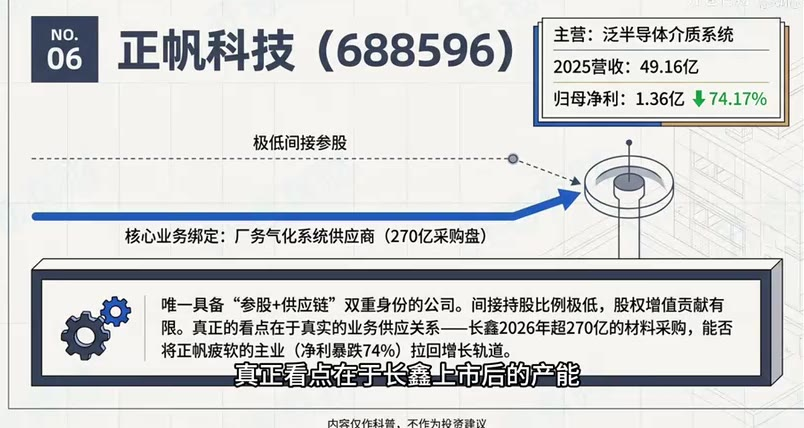
[03:30] NO. / 正帆科技 / （688596） / 主营：泛半导体介质系统 / 2025营收：49.16亿 / 归母净利：1.36亿 / 74.17% / 极低间接参股 / 核心业务绑定：厂务气化系统供应商（270亿采购盘） / 唯一具备“参股+供应链”双重身份的公司。间接持股比例极低，股权增值贡献有 / 限。真正的看点在于真实的业务供应关系一长鑫2026年超270亿的材料采购，能否 / 将正帆疲软的主业（净利暴跌74%）拉回增长轨道。 / 扩张能不能带动它的运维业务回正 / 内容仅作科普，不作为投资建议
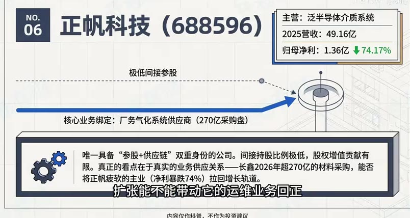
[03:33] NO. / 大众公用（600635） / 2025营收：61.13亿 / 归母净利：4.15亿 / 78.07%（主要系非经常性风投收益） / 间接早期融资：持股约0.05%-0.1% / 典型的 / “投资组合里的一颗明珠”。作为庞大的综合公用事业和创投平台，长鑫只是其 / 众多被投项目之一。好处是平台资产多元、抗风险强；坏处是长鑫带来的弹性被 / 巨大的平台体量彻底稀释，属于锦上添花而非雪中送炭。 / 内容仅作科管，不作为投资建议
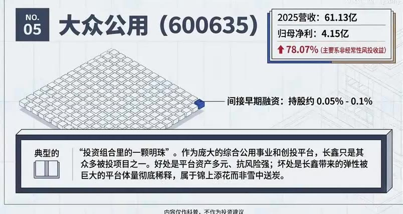
[03:36] NO. / 大众公用 / （600635） / 2025营收：61.13亿 / 归母净利：4.15亿 / 78.07%（主要系非经常性风投收益） / 间接早期融资：持股约0.05%-0.1% / 典型的 / “投资组合里的一颗明珠”。作为庞大的综合公用事业和创投平台，长鑫只是其 / 众多被投项目之一。好处是平台资产多元、抗风险强；坏处是长鑫带来的弹性被 / 巨大的平台体量彻底稀释，属于锦上添花而非雪中送炭。 / 2025年营收61.13亿 / 内容仅作科管，不作为投资建议
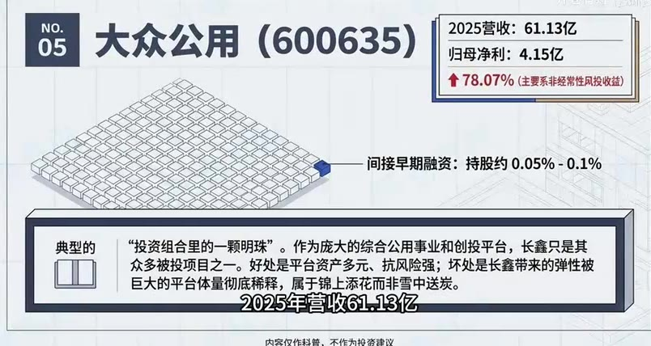
[03:39] NO. / 大众公用 / （600635） / 2025营收：61.13亿 / 归母净利：4.15亿 / 78.07%（主要系非经常性风投收益） / 间接早期融资：持股约0.05%-0.1% / 典型的 / “投资组合里的一颗明珠”。作为庞大的综合公用事业和创投平台，长鑫只是其 / 众多被投项目之一。好处是平台资产多元、抗风险强；坏处是长鑫带来的弹性被 / 巨大的平台体量彻底稀释，属于锦上添花而非雪中送炭。 / 下降3.51% / 内容仅作科管， / 不作为投资建议
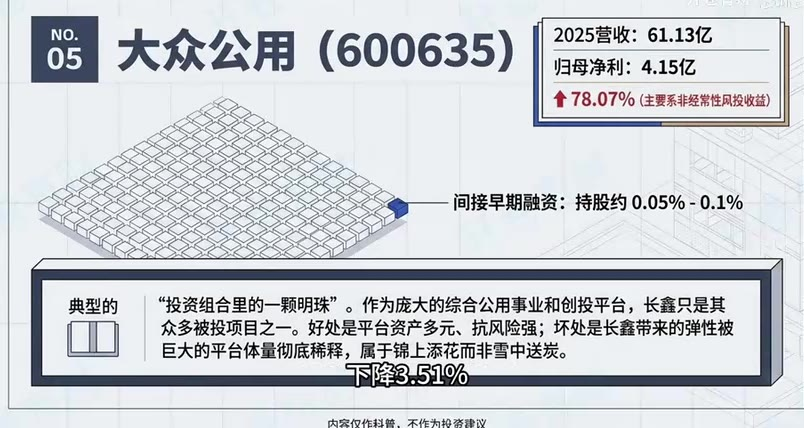
[03:42] NO. / 大众公用 / （600635） / 2025营收：61.13亿 / 归母净利：4.15亿 / 78.07%（主要系非经常性风投收益） / 间接早期融资：持股约0.05%-0.1% / 典型的 / “投资组合里的一颗明珠”。作为庞大的综合公用事业和创投平台，长鑫只是其 / 众多被投项目之一。好处是平台资产多元、抗风险强；坏处是长鑫带来的弹性被 / 巨大的平台体量彻底稀释，属于锦上添花而非雪中送炭。 / 增长78.07% / 内容仅作科管，不作为投资建议
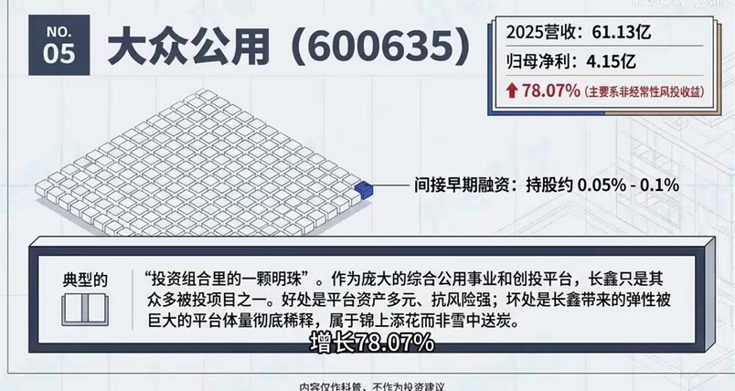
[03:45] NO. / 大众公用 / （600635） / 2025营收：61.13亿 / 归母净利：4.15亿 / 78.07%（主要系非经常性风投收益） / 间接早期融资：持股约0.05%-0.1% / 典型的 / “投资组合里的一颗明珠”。作为庞大的综合公用事业和创投平台，长鑫只是其 / 众多被投项目之一。好处是平台资产多元、抗风险强；坏处是长鑫带来的弹性被 / 巨大的平台体量彻底稀释，属于锦上添花而非雪中送炭。 / 但扣非只有1.8亿 / 内容仅作科管，不作为投资建议
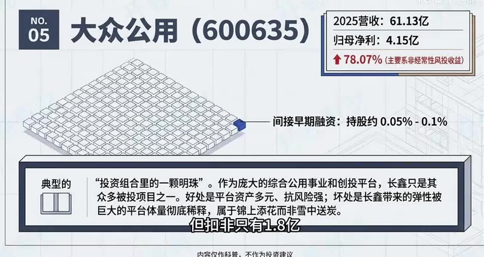
[03:48] NO. / 大众公用 / （600635） / 2025营收：61.13亿 / 归母净利：4.15亿 / 78.07%（主要系非经常性风投收益） / 间接早期融资：持股约0.05%-0.1% / 典型的 / “投资组合里的一颗明珠”。作为庞大的综合公用事业和创投平台，长鑫只是其 / 众多被投项目之一。好处是平台资产多元、抗风险强；坏处是长鑫带来的弹性被 / 巨大的平台体量彻底稀释，属于锦上添花而非雪中送炭。 / 净利润主要来自投资公充价值变动 / 内容仅作科管，不作为投资建议
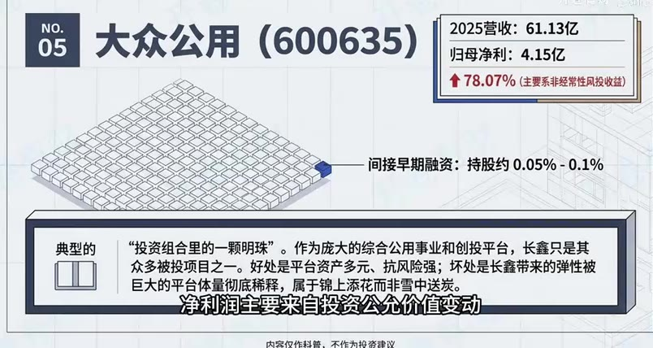
[03:51] NO. / 大众公用 / 月（600635） / 2025营收：61.13亿 / 归母净利：4.15亿 / 78.07%（主要系非经常性风投收益） / 间接早期融资：持股约0.05%-0.1% / 典型的 / “投资组合里的一颗明珠”。作为庞大的综合公用事业和创投平台，长鑫只是其 / 众多被投项目之一。好处是平台资产多元、抗风险强；坏处是长鑫带来的弹性被 / 巨大的平台体量彻底稀释，属于锦上添花而非雪中送炭。 / 它通过创投平台间接 / 内容仅作科管，不作为投资建议
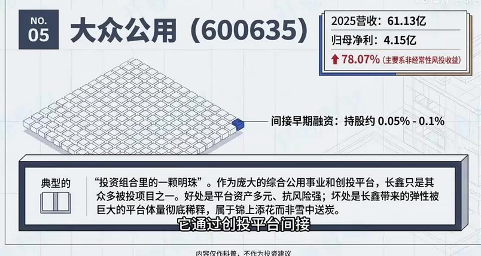
[03:54] NO. / 大众公用 / （600635） / 2025营收：61.13亿 / 归母净利：4.15亿 / 78.07%（主要系非经常性风投收益） / 间接早期融资：持股约0.05%-0.1% / 典型的 / “投资组合里的一颗明珠”。作为庞大的综合公用事业和创投平台，长鑫只是其 / 众多被投项目之一。好处是平台资产多元、抗风险强；坏处是长鑫带来的弹性被 / 巨大的平台体量彻底稀释，属于锦上添花而非雪中送炭。 / 持有长鑫约0.05%-0.1% / 内容仅作科管，不作为投资建议
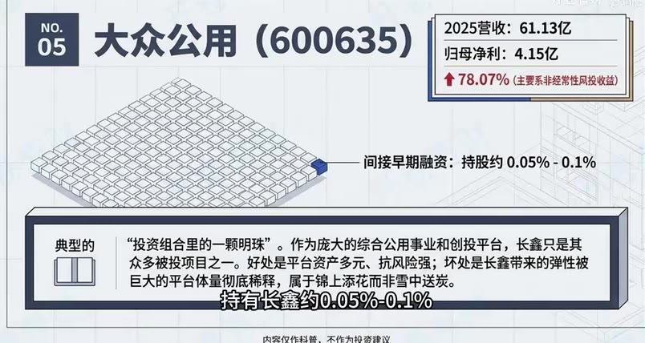
[03:57] NO. / 大众公用 / （600635） / 2025营收：61.13亿 / 归母净利：4.15亿 / 78.07%（主要系非经常性风投收益） / 间接早期融资：持股约0.05%-0.1% / 典型的 / “投资组合里的一颗明珠”。作为庞大的综合公用事业和创投平台，长鑫只是其 / 众多被投项目之一。好处是平台资产多元、抗风险强；坏处是长鑫带来的弹性被 / 巨大的平台体量彻底稀释，属于锦上添花而非雪中送炭。 / 长鑫是他投资组合里的一颗明珠 / 内容仅作科管，不作为投资建议
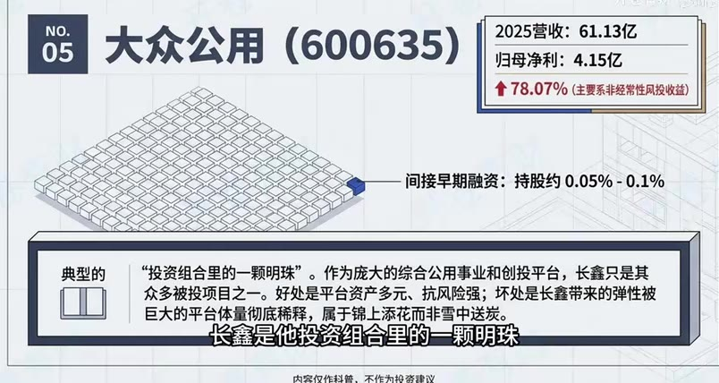
[04:00] NO. / 大众公用 / （600635） / 2025营收：61.13亿 / 归母净利：4.15亿 / 78.07%（主要系非经常性风投收益） / 间接早期融资：持股约0.05%-0.1% / 典型的 / “投资组合里的一颗明珠”。作为庞大的综合公用事业和创投平台，长鑫只是其 / 众多被投项目之一。好处是平台资产多元、抗风险强；坏处是长鑫带来的弹性被 / 巨大的平台体量彻底稀释，属于锦上添花而非雪中送炭。 / 弹性被稀释了 / 内容仅作科管，不作为投资建议
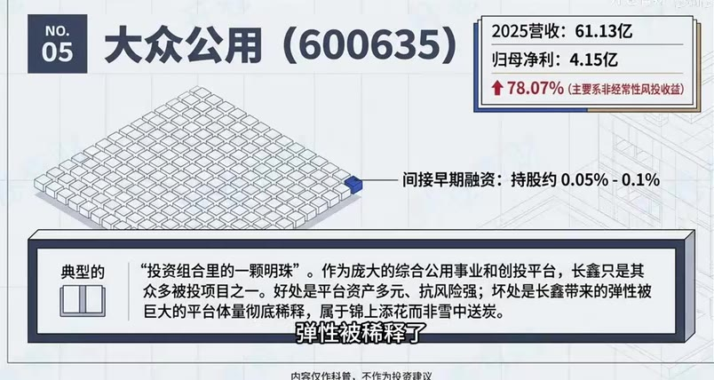
[04:03] NO. / 中山公用（000685） / 主营：水务/环保/投资 / 归母净利：18.79亿 / 56.77%（创 / 新能源产业基金 / 资产负债率：47.33% / 间接持股：约0.11% / （对应市值约11亿） / “主业现金流+投资高弹性”的平台型结构。持股对应市值约11亿元，有数倍增值空 / 进一步推高其创历史新高的利润基数。但同样面临间接持股的穿透损耗，且18亿+的 / 量让边际弹性依然受限第四名中山公用 / 内容仅作科普，不作为投资建议
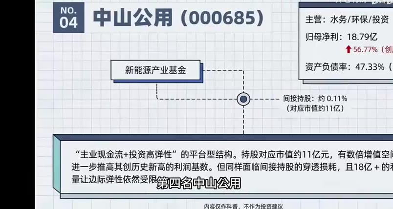
[04:06] NO. / 中山公用（000685） / 主营：水务/环保/投资 / 归母净利：18.79亿 / 56.77%（创历史新高） / 新能源产业基金 / 资产负债率：47.33%（稳健） / 间接持股：约0.11% / （对应市值约11亿） / “主业现金流+投资高弹性”的平台型结构。持股对应市值约11亿元，有数倍增值空间，将 / 进一步推高其创历史新高的利润基数。但同样面临间接持股的穿透损耗，且18亿+的利润体 / 量让边际弹性依然受限。 / 中山市属国有控股 / 内容仅作科普，不作为投资建议
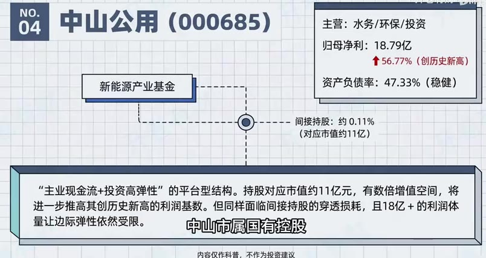
[04:09] NO. / 中山公用（000685） / 主营：水务/环保/投资 / 归母净利：18.79亿 / ↑56.77%（创历史新高） / 新能源产业基金 / 资产负债率：47.33%（稳健） / 间接持股：约0.11% / （对应市值约11亿） / “主业现金流+投资高弹性”的平台型结构。持股对应市值约11亿元，有数倍增值空间，将 / 进一步推高其创历史新高的利润基数。但同样面临间接持股的穿透损耗，且18亿+的利润体 / 量让边际弹性依然受限。 / 2025年营收46.12亿 / 内容仅作科普，不作为投资建议
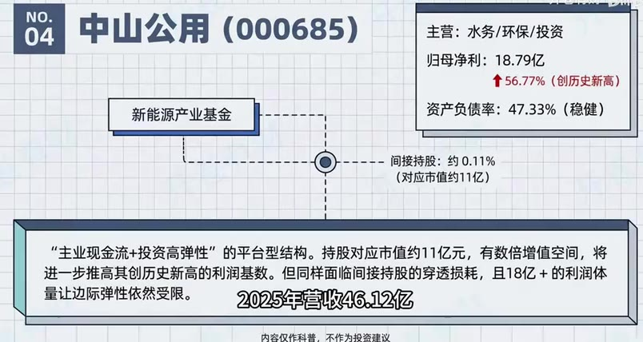
[04:12] NO. / 中山公用（000685） / 主营：水务/环保/投资 / 归母净利：18.79亿 / ↑56.77%（创历史新高） / 新能源产业基金 / 资产负债率：47.33%（稳健） / 间接持股：约0.11% / （对应市值约11亿） / “主业现金流+投资高弹性”的平台型结构。持股对应市值约11亿元，有数倍增值空间，将 / 进一步推高其创历史新高的利润基数。但同样面临间接持股的穿透损耗，且18亿+的利润体 / 量让边际弹性依然受限。 / 下降8.78% / 内容仅作科普，不作为投资建议
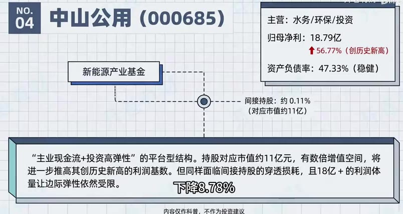
[04:15] NO. / 中山公用（000685） / 主营：水务/环保/投资 / 归母净利：18.79亿 / ↑56.77%（创历史新高） / 新能源产业基金 / 资产负债率：47.33%（稳健） / 间接持股：约0.11% / （对应市值约11亿） / “主业现金流+投资高弹性”的平台型结构。持股对应市值约11亿元，有数倍增值空间，将 / 进一步推高其创历史新高的利润基数。但同样面临间接持股的穿透损耗，且18亿+的利润体 / 量让边际弹性依然受限。 / 但归母净利18.79亿 / 内容仅作科普，不作为投资建议
[04:18] NO. / 中山公用（000685） / 主营：水务/环保/投资 / 归母净利：18.79亿 / ↑56.77%（创历史新高） / 新能源产业基金 / 资产负债率：47.33%（稳健） / 间接持股：约0.11% / （对应市值约11亿） / “主业现金流+投资高弹性”的平台型结构。持股对应市值约11亿元，有数倍增值空间，将 / 进一步推高其创历史新高的利润基数。但同样面临间接持股的穿透损耗，且18亿+的利润体 / 量让边际弹性依然受限。 / 创历史新高 / 内容仅作科普，不作为投资建议
[04:21] NO. / 中山公用（000685） / 主营：水务/环保/投资 / 归母净利：18.79亿 / 56.77%（创历史新高） / 新能源产业基金 / 资产负债率：47.33%（稳健） / 间接持股：约0.11% / （对应市值约11亿） / “主业现金流+投资高弹性”的平台型结构。持股对应市值约11亿元，有数倍增值空间，将 / 进一步推高其创历史新高的利润基数。但同样面临间接持股的穿透损耗，且18亿+的利润体 / 量让边际弹性依然受限。 / 总资产365亿 / 内容仅作科普，不作为投资建议
[04:24] NO. / 中山公用（000685） / 主营：水务/环保/投资 / 归母净利：18.79亿 / 56.77%（创历史新高） / 新能源产业基金 / 资产负债率：47.33%（稳健） / 间接持股：约0.11% / （对应市值约11亿） / “主业现金流+投资高弹性”的平台型结构。持股对应市值约11亿元，有数倍增值空间，将 / 进一步推高其创历史新高的利润基数。但同样面临间接持股的穿透损耗，且18亿+的利润体 / 量让边际弹性依然受限。 / 他通过新能源产业 / 内容仅作科普，不作为投资建议
[04:27] NO. / 中山公用（000685） / 主营：水务/环保/投资 / 归母净利：18.79亿 / 56.77%（创历史新高） / 新能源产业基金 / 资产负债率：47.33%（稳健） / 间接持股：约0.11% / （对应市值约11亿） / “主业现金流+投资高弹性”的平台型结构。持股对应市值约11亿元，有数倍增值空间，将 / 进一步推高其创历史新高的利润基数。但同样面临间接持股的穿透损耗，且18亿+的利润体 / 量让边际弹性依然受限。 / 基金持有长鑫约0.11% / 内容仅作科普，不作为投资建议
[04:30] NO. / 中山公用（000685） / 主营：水务/环保/投资 / 归母净利：18.79亿 / 56.77%（创历史新高） / 新能源产业基金 / 资产负债率：47.33%（稳健） / 间接持股：约0.11% / （对应市值约11亿） / “主业现金流+投资高弹性”的平台型结构。持股对应市值约11亿元，有数倍增值空间，将 / 进一步推高其创历史新高的利润基数。但同样面临间接持股的穿透损耗，且18亿+的利润体 / 量让边际弹性依然受限。 / 估值约11亿 / 内容仅作科普，不作为投资建议
[04:33] NO. / 中山公用（000685） / 主营：水务/环保/投资 / 归母净利：18.79亿 / 56.77%（创历史新高） / 新能源产业基金 / 资产负债率：47.33%（稳健） / 间接持股：约0.11% / （对应市值约11亿） / “主业现金流+投资高弹性”的平台型结构。持股对应市值约11亿元，有数倍增值空间，将 / 进一步推高其创历史新高的利润基数。但同样面临间接持股的穿透损耗，且18亿+的利润体 / 量让边际弹性依然受限。 / 但同样是间接持股有损耗 / 内容仅作科普，不作为投资建议
[04:36] NO. / 中山公用（000685） / 主营：水务/环保/投资 / 归母净利：18.79亿 / ↑56.77%（创历史新高） / 新能源产业基金 / 资产负债率：47.33%（稳健） / 间接持股：约0.11% / （对应市值约11亿） / “主业现金流+投资高弹性”的平台型结构。持股对应市值约11亿元，有数倍增值空间，将 / 进一步推高其创历史新高的利润基数。但同样面临间接持股的穿透损耗，且18亿+的利润体 / 量让边际弹性依然受限。 / 而且公司利润体量已经18亿 / 内容仅作科普，不作为投资建议
[04:39] NO. / 中山公用（000685） / 主营：水务/环保/投资 / 归母净利：18.79亿 / ↑56.77%（创历史新高） / 新能源产业基金 / 资产负债率：47.33%（稳健） / 间接持股：约0.11% / （对应市值约11亿） / “主业现金流+投资高弹性”的平台型结构。持股对应市值约11亿元，有数倍增值空间，将 / 进一步推高其创历史新高的利润基数。但同样面临间接持股的穿透损耗，且18亿+的利润体 / 量让边际弹性依然受限。 / 长兴带来的边际弹性有限 / 内容仅作科普，不作为投资建议
[04:42] NO. / 上峰水泥（000672） / 财务与战略关键指标 / 毛利率：28.89% / 归母净利：6.38亿 / 战略：拟更名“上峰材料” / 直接出资2亿 / 合计4亿元出资→穿透后持股约0.15% / （账面浮盈超11亿） / 间接出资2亿 / 跨界参股者中动作最踊跃的一家。超11亿的账面浮盈，对年净利6.38亿的公司具有改变基本面的分量。 / 公司拟更名“上峰材料”，并布局半导体封装基板，投资金额大、相对弹性高、战略转型清晰。 / 内容仅作科普，不作为投资建议
[04:45] NO. / 上峰水泥（000672） / 财务与战略关键指标 / 毛利率：28.89% / 归母净利：6.38亿 / 战略：拟更名“上峰材料” / 直接出资2亿 / 合计4亿元出资→穿透后持股约0.15% / （账面浮盈超11亿） / 间接出资2亿 / 跨界参股者中动作最踊跃的一家。超11亿的账面浮盈，对年净利6.38亿的公司具有改变基本面的分量。 / 公司拟更名“上峰材料”，并布局半异体封装基板投盗金额大、相对弹性高、战略转型清晰。 / 和新经济投资转型 / 内容仅作科普，不作为投资建议
[04:48] NO. / 上峰水泥（000672） / 财务与战略关键指标 / 毛利率：28.89% / 归母净利：6.38亿 / 战略：拟更名“上峰材料” / 直接出资2亿 / 合计4亿元出资→穿透后持股约0.15% / （账面浮盈超11亿） / 间接出资2亿 / 跨界参股者中动作最踊跃的一家。超11亿的账面浮盈，对年净利6.38亿的公司具有改变基本面的分量。 / 公司拟更名“上峰材料”，并布局半导体封装基板，投资金额大、相对弹性高、战略转型清晰。 / 2025年营收46.92亿 / 内容仅作科普，不作为投资建议
[04:51] NO. / 上峰水泥（000672） / 财务与战略关键指标 / 毛利率：28.89% / 归母净利：6.38亿 / 战略：拟更名“上峰材料” / 直接出资2亿 / 合计4亿元出资→穿透后持股约0.15% / （账面浮盈超11亿） / 间接出资2亿 / 跨界参股者中动作最踊跃的一家。超11亿的账面浮盈，对年净利6.38亿的公司具有改变基本面的分量。 / 公司拟更名“上峰材料”，并布局关导体封装基板投资金额大、相对弹性高、战略转型清晰。 / 净利6.38亿 / 内容仅作科普，不作为投资建议
[04:54] NO. / 上峰水泥（000672） / 财务与战略关键指标 / 毛利率：28.89% / 归母净利：6.38亿 / 战略：拟更名“上峰材料” / 直接出资2亿 / 合计4亿元出资→穿透后持股约0.15% / （账面浮盈超11亿） / 间接出资2亿 / 跨界参股者中动作最踊跃的一家。超11亿的账面浮盈，对年净利6.38亿的公司具有改变基本面的分量。 / 公司拟更名“上峰材料”，并布局光导体封装基板。投资金额大、相对弹性高、战略转型清晰。 / 毛利率还提升了 / 内容仅作科普，不作为投资建议
[04:57] NO. / 上峰水泥（000672） / 财务与战略关键指标 / 毛利率：28.89% / 归母净利：6.38亿 / 战略：拟更名“上峰材料” / 直接出资2亿 / 合计4亿元出资→穿透后持股约0.15% / （账面浮盈超11亿） / 间接出资2亿 / 跨界参股者中动作最踊跃的一家。超11亿的账面浮盈，对年净利6.38亿的公司具有改变基本面的分量。 / 公司拟更名“上峰材料”，并布局半导体封装基板，投资金额大、相对弹性高、战略转型清晰。 / 创投平台再投2亿 / 内容仅作科普，不作为投资建议
[05:00] NO. / 上峰水泥（000672） / 财务与战略关键指标 / 毛利率：28.89% / 归母净利：6.38亿 / 战略：拟更名“上峰材料” / 直接出资2亿 / 合计4亿元出资→穿透后持股约0.15% / （账面浮盈超11亿） / 间接出资2亿 / 跨界参股者中动作最踊跃的一家。超11亿的账面浮盈，对年净利6.38亿的公司具有改变基本面的分量。 / 公司拟更名“上峰材料”，并布局半导体封装基板，投资金额大、相对弹性高、战略转型清晰。 / 穿透后持股约0.15% / 内容仅作科普，不作为投资建议
[05:03] NO. / 上峰水泥（000672） / 财务与战略关键指标 / 毛利率：28.89% / 归母净利：6.38亿 / 战略：拟更名“上峰材料” / 直接出资2亿 / 合计4亿元出资→穿透后持股约0.15% / （账面浮盈超11亿） / 间接出资2亿 / 跨界参股者中动作最踊跃的一家。超11亿的账面浮盈，对年净利6.38亿的公司具有改变基本面的分量。 / 公司拟更名“上峰材料”，并布局半导体封装基板，投资金额大、相对弹性高、战略转型清晰。 / 估值15亿 / 内容仅作科普，不作为投资建议
[05:06] NO. / 上峰水泥（000672） / 财务与战略关键指标 / 毛利率：28.89% / 归母净利：6.38亿 / 战略：拟更名“上峰材料” / 直接出资2亿 / 合计4亿元出资→穿透后持股约0.15% / （账面浮盈超11亿） / 间接出资2亿 / 跨界参股者中动作最踊跃的一家。超11亿的账面浮盈，对年净利6.38亿的公司具有改变基本面的分量。 / 公司拟更名“上峰材料”并布局半导体封装基板投盗金额太， / 相对弹性高、战略转型清晰。 / 对年利润6亿多的公司来说 / 内容仅作科普，不作为投资建议
[05:09] NO. / 上峰水泥（000672） / 财务与战略关键指标 / 毛利率：28.89% / 归母净利：6.38亿 / 战略：拟更名“上峰材料” / 直接出资2亿 / 合计4亿元出资→穿透后持股约0.15% / （账面浮盈超11亿） / 间接出资2亿 / 跨界参股者中动作最踊跃的一家。超11亿的账面浮盈，对年净利6.38亿的公司具有改变基本面的分量。 / 公司拟更名“上峰材料”，并在局半导体封装基板。投资金额大、相对弹性高、战略转型清晰。 / 而且它还在布局 / 内容仅作科普，不作为投资建议
[05:12] NO. / 上峰水泥（000672） / 财务与战略关键指标 / 毛利率：28.89% / 归母净利：6.38亿 / 战略：拟更名“上峰材料” / 直接出资2亿 / 合计4亿元出资→穿透后持股约0.15% / （账面浮盈超11亿） / 间接出资2亿 / 跨界参股者中动作最踊跃的一家。超11亿的账面浮盈，对年净利6.38亿的公司具有改变基本面的分量。 / 公司拟更名“上峰材料”，并布局半导体封装基板，投资金额大、相对弹性高、战略转型清晰。 / 战略方向衔接的上 / 内容仅作科普，不作为投资建议
[05:15] NO. / 美的集团（000333） / 2025营收：458 / 归母净利：439 / ToB收入1228亿 / 全资子公司直接持股：0.76%（投资15亿→估值76-91亿 / 绝对数值庞大的直接受益者。60-76亿的浮盈能一次性增厚年利润5%-7%。更 / 红利在于产业协同：美的高额注资旨在布局家电MCU与功率器件，长鑫上市 / 获得纯财务投资第≥名美的集团连位置。 / 内容仅作科普，不作为投资建议
[05:18] NO. / 美的集团（000333） / 2025营收：4585亿 / 归母净利：439.5亿 / ↑14% / ToB收入1228亿成为第二曲线 / 全资子公司直接持股：0.76%（投资15亿→估值76-91亿） / 绝对数值庞大的直接受益者。60-76亿的浮盈能一次性增厚年利润5%-7%。更核心的隐性 / 红利在于产业协同：美的高额注资旨在布局家电MCU与功率器件，长鑫上市后，美的将 / 获得纯财务投资者拿不到的优渥供全球电龙头 / 内容仅作科普，不作为投资建议
[05:21] NO. / 美的集团（000333） / 2025营收：4585亿 / 归母净利：439.5亿 / ↑14% / ToB收入1228亿成为第二曲线 / 全资子公司直接持股：0.76%（投资15亿→估值76-91亿） / 绝对数值庞大的直接受益者。60-76亿的浮盈能一次性增厚年利润5%-7%。更核心的隐性 / 红利在于产业协同：美的高额注资旨在布局家电MCU与功率器件，长鑫上市后，美的将 / 获得纯财务投资者拿不到的优屋供应增长12.1% / 内容仅作科普，不作为投资建议
[05:24] NO. / 美的集团（000333） / 2025营收：4585亿 / 归母净利：439.5亿 / ↑14% / ToB收入1228亿成为第二曲线 / 全资子公司直接持股：0.76%（投资15亿→估值76-91亿） / 绝对数值庞大的直接受益者。60-76亿的浮盈能一次性增厚年利润5%-7%。更核心的隐性 / 红利在于产业协同：美的高额注资旨在布局家电MCU与功率器件，长鑫上市后，美的将 / 获得纯财务投资者拿不到的优净利4395亿增长14% / 内容仅作科普，不作为投资建议
[05:27] NO. / 美的集团（000333） / 2025营收：4585亿 / 归母净利：439.5亿 / ↑14% / ToB收入1228亿成为第二曲线 / 全资子公司直接持股：0.76%（投资15亿→估值76-91亿） / 绝对数值庞大的直接受益者。60-76亿的浮盈能一次性增厚年利润5%-7%。更核心的隐性 / 红利在于产业协同：美的高额注资旨在布局家电MCU与功率器件，长鑫上市后，美的将 / 获得纯财务投资者拿不到的优他通过全资子公司 / 内容仅作科普，不作为投资建议
[05:30] NO. / 美的集团（000333） / 2025营收：4585亿 / 归母净利：439.5亿 / ↑14% / ToB收入1228亿成为第二曲线 / 全资子公司直接持股：0.76%（投资15亿→估值76-91亿） / 绝对数值庞大的直接受益者。60-76亿的浮盈能一次性增厚年利润5%-7%。更核心的隐性 / 红利在于产业协同：美的高额注资旨在布局家电MCU与功率器件，长鑫上市后，美的将 / 获得纯财务投资者拿不到的优渥供应投约15亿 / 内容仅作科普，不作为投资建议
[05:33] NO. / 美的集团（000333） / 2025营收：4585亿 / 归母净利：439.5亿 / ↑14% / ToB收入1228亿成为第二曲线 / 全资子公司直接持股：0.76%（投资15亿→估值76-91亿） / 绝对数值庞大的直接受益者。60-76亿的浮盈能一次性增厚年利润5%-7%。更核心的隐性 / 红利在于产业协同：美的高额注资旨在布局家电MCU与功率器件，长鑫上市后，美的将 / 获得纯财务投资者拿不到的做按方信估值对应76亿 / 内容仅作科普，不作为投资建议
[05:36] NO. / 美的集团（000333） / 2025营收：4585亿 / 归母净利：439.5亿 / ↑14% / ToB收入1228亿成为第二曲线 / 全资子公司直接持股：0.76%（投资15亿→估值76-91亿） / 绝对数值庞大的直接受益者。60-76亿的浮盈能一次性增厚年利润5%-7%。更核心的隐性 / 红利在于产业协同：美的高额注资旨在布局家电MCU与功率器件，长鑫上市后，美的将 / 获得纯财务投资者拿不到的优渥供应浮盈约61亿 / 内容仅作科普，不作为投资建议
[05:39] NO. / 美的集团（000333） / 2025营收：4585亿 / 归母净利：439.5亿 / ↑14% / ToB收入1228亿成为第二曲线 / 全资子公司直接持股：0.76%（投资15亿→估值76-91亿） / 绝对数值庞大的直接受益者。60-76亿的浮盈能一次性增厚年利润5%-7%。更核心的隐性 / 红利在于产业协同：美的高额注资旨在布局家电MCU与功率器件，长鑫上市后，美的将 / 获得纯财务投资者拿不到的优屋供应数寸应91亿 / 内容仅作科普，不作为投资建议
[05:42] NO. / 美的集团（000333） / 2025营收：4585亿 / 归母净利：439.5亿 / ↑14% / ToB收入1228亿成为第二曲线 / 全资子公司直接持股：0.76%（投资15亿→估值76-91亿） / 绝对数值庞大的直接受益者。60-76亿的浮盈能一次性增厚年利润5%-7%。更核心的隐性 / 红利在于产业协同：美的高额注资旨在布局家电MCU与功率器件，长鑫上市后，美的将 / 获得纯财务投资者拿不致对年利润400多亿的美的来说 / 内容仅作科普，不作为投资建议
[05:45] NO. / 美的集团（000333） / 2025营收：4585亿 / 归母净利：439.5亿 / ↑14% / ToB收入1228亿成为第二曲线 / 全资子公司直接持股：0.76%（投资15亿→估值76-91亿） / 绝对数值庞大的直接受益者。60-76亿的浮盈能一次性增厚年利润5%-7%。更核心的隐性 / 红利在于产业协同：美的高额注资旨在布局家电MCU与功率器件，长鑫上市后，美的将 / 获得纯财务投资者拿不到的优渥供应绝对数大 / 内容仅作科普，不作为投资建议
[05:48] NO. / 美的集团（000333） / 2025营收：4585亿 / 归母净利：439.5亿 / ↑14% / ToB收入1228亿成为第二曲线 / 全资子公司直接持股：0.76%（投资15亿→估值76-91亿） / 绝对数值庞大的直接受益者。60-76亿的浮盈能一次性增厚年利润5%-7%。更核心的隐性 / 红利在于产业协同：美的高额注资旨在布局家电MCU与功率器件，长鑫上市后，美的将 / 获得纯财务投资者拿不不过美的投长鑫不只是财务行为 / 内容仅作科普，不作为投资建议
[05:51] NO. / 美的集团（000333） / 2025营收：4585亿 / 归母净利：439.5亿 / ↑14% / ToB收入1228亿成为第二曲线 / 全资子公司直接持股：0.76%（投资15亿→估值76-91亿） / 绝对数值庞大的直接受益者。60-76亿的浮盈能一次性增厚年利润5%-7%。更核心的隐性 / 红利在于产业协同：美的高额注资旨在布局家电MCU与功率器件，长鑫上市后，美的将 / 获得纯财务投资者拿不到还有芯片供应链的产业呼应 / 内容仅作科普，不作为投资建议
[05:54] NO. / 兆易创新（603986） / 2026Q1营 / 净利润：1 / A股最高直接持股：1.88%（投资15亿→对应市值约188 / 股权层： / 业务层： / 12个月解禁后，获得远 / 国内唯一“虚拟IDM”组合。 / 超自身年利润的可变现 / 26年关联采购超56亿（同增4倍）， / 它在采购上可能拿到更优位置本稳定代工产能。 / 内容仅作科普，不作为投资建议
[05:57] NO. / 兆易创新（603986） / 2026Q1营收：41.88亿1119% / 净利润：14.61亿（单季接近25全年） / A股最高直接持股：1.88%（投资15亿→对应市值约188亿，超10倍回报） / 股权层： / 业务层： / 管理层： / 12个月解禁后，获得远 / 国内唯一“虚拟IDM”组合。 / 董事长同为朱一明， / 超自身年利润的可变现 / 26年关联采购超56亿（同增4倍）， / 战略协同无天花板。 / 资产，资产负债表重估。 / 第一名兆易创新 / 内容仅作科普，不作为投资建议
[06:00] NO. / 兆易创新（603986） / 2026Q1营收：41.88亿↑119% / 净利润：14.61亿（单季接近25全年） / A股最高直接持股：1.88%（投资15亿→对应市值约188亿，超10倍回报） / 股权层： / 业务层： / 管理层： / 12个月解禁后，获得远 / 国内唯一“虚拟IDM”组合。 / 董事长同为朱一明， / 超自身年利润的可变现 / 26年关联采购超56亿（同增4倍）， / 战略协同无天花板。 / 资产，资产负债表重估。 / 受益最直接最全面 / 内容仅作科普，不作为投资建议
[06:03] NO. / 兆易创新（603986） / 2026Q1营收：41.88亿↑119% / 净利润：14.61亿（单季接近25全年） / A股最高直接持股：1.88%（投资15亿→对应市值约188亿，超10倍回报） / 股权层： / 业务层： / 管理层： / 12个月解禁后，获得远 / 国内唯一“虚拟IDM”组合。 / 董事长同为朱一明， / 超自身年利润的可变现 / 26年关联采购超56亿（同增4倍）， / 战略协同无天花板。 / 资产，资产负债表重估。股权上它直接持有长鑫1.88% / 内容仅作科普，不作为投资建议
[06:06] NO. / 兆易创新（603986） / 2026Q1营收：41.88亿↑119% / 净利润：14.61亿（单季接近25全年） / A股最高直接持股：1.88%（投资15亿→对应市值约188亿，超10倍回报） / 股权层： / 业务层： / 管理层： / 12个月解禁后，获得远 / 国内唯一“虚拟IDM”组合。 / 董事长同为朱一明， / 超自身年利润的可变现 / 26年关联采购超56亿（同增4倍）： / 战略协同无天花板。 / 资产，资产负债表重估。是所有A股里直接持股最高的 / 内容仅作科普，不作为投资建议
[06:09] NO. / 兆易创新（603986） / 2026Q1营收：41.88亿119% / 净利润：14.61亿（单季接近25全年） / A股最高直接持股：1.88%（投资15亿→对应市值约188亿，超10倍回报） / 股权层： / 业务层： / 管理层： / 12个月解禁后，获得远 / 国内唯一“虚拟IDM”组合。 / 董事长同为朱一明， / 超自身年利润的可变现 / 26年关联采购超56亿（同增4倍）， / 战略协同无天花板。 / 资产，资产负债表重估。 / 相对他15亿的投资成本 / 内容仅作科普，不作为投资建议
[06:12] NO. / 兆易创新（603986） / 2026Q1营收：41.88亿↑119% / 净利润：14.61亿（单季接近25全年） / A股最高直接持股：1.88%（投资15亿→对应市值约188亿，超10倍回报） / 股权层： / 业务层： / 管理层： / 12个月解禁后，获得远 / 国内唯一“虚拟IDM”组合。 / 董事长同为朱一明， / 超自身年利润的可变现 / 26年关联采购超56亿（同增4倍）： / 战略协同无天花板。 / 资产，资产负债表重估。 / 10倍以上账面回报业务上 / 内容仅作科普，不作为投资建议
[06:15] NO. / 兆易创新（603986） / 2026Q1营收：41.88亿↑119% / 净利润：14.61亿（单季接近25全年） / A股最高直接持股：1.88%（投资15亿→对应市值约188亿，超10倍回报） / 股权层： / 业务层： / 管理层： / 12个月解禁后，获得远 / 国内唯一“虚拟IDM”组合。 / 董事长同为朱一明， / 超自身年利润的可变现 / 26年关联采购超56亿（同增4倍）， / 战略协同无天花板。 / 资产，资产负债表他是长鑫在DRAM领域的虚拟IDM搭档 / 内容仅作科普，不作为投资建议
[06:18] 穿透迷雾：九大参股公司受益逻辑全景矩阵 / 公司 / 主业 / 持股通道 / 产业协同 / 受益弹性 / 兆易创新 / 存储芯片 / 直接持股 / 美的集团 / 白色家电 / 直接持股 / 上峰水泥 / 水泥/材料 / 直接+间接 / 中山公用 / 水务投资 / 间接持股 / 大众公用 / 公用创投 / 间接持股 / 正帆科技 / 厂务气化 / 间接持股 / 合肥城建 / 房地产 / 极微间接 / 朗迪集团 / 空调配件 / 间接持股 / 合百集团 / 商业零售 / 间接持股 / 结论：真正的核心受益责力机型产品设试和市场对体量”的铁三角条件。 / 内容仅作科普，不作为投资建议
[06:21] 穿透迷雾：九大参股公司受益逻辑全景矩阵 / 公司 / 主业 / 持股通道 / 产业协同 / 受益弹性 / 兆易创新 / 存储芯片 / 直接持股 / 美的集团 / 白色家电 / 直接持股 / 上峰水泥 / 水泥/材料 / 直接+间接 / 中山公用 / 水务投资 / 间接持股 / 大众公用 / 公用创投 / 间接持股 / 正帆科技 / 厂务气化 / 间接持股 / 合肥城建 / 房地产 / 极微间接 / X否 / 朗迪集团 / 空调配件 / 间接持股 / 合百集团 / 商业零售 / 间接持股 / 结论：真正的核心受长鑫代工2025年关联交易116亿量”的铁三角条件。 / 内容仅作科普，不作为投资建议
[06:24] 穿透迷雾：九大参股公司受益逻辑全景矩阵 / 公司 / 主业 / 持股通道 / 产业协同 / 受益弹性 / 兆易创新 / 存储芯片 / 直接持股 / 美的集团 / 白色家电 / 直接持股 / 上峰水泥 / 水泥/材料 / 直接+间接 / 中山公用 / 水务投资 / 间接持股 / 大众公用 / 公用创投 / 间接持股 / 正帆科技 / 厂务气化 / 间接持股 / 合肥城建 / 房地产 / 极微间接 / X否 / 朗迪集团 / 空调配件 / 间接持股 / 合百集团 / 商业零售 / 间接持股 / 结论：真正的核心受2026年采购额度直接到超56亿量”的铁三角条件。 / 内容仅作科普，不作为投资建议
[06:27] 穿透迷雾：九大参股公司受益逻辑全景矩阵 / 公司 / 主业 / 持股通道 / 产业协同 / 受益弹性 / 兆易创新 / 存储芯片 / 直接持股 / 美的集团 / 白色家电 / 直接持股 / 上峰水泥 / 水泥/材料 / 直接+间接 / 中山公用 / 水务投资 / 间接持股 / 大众公用 / 公用创投 / 间接持股 / 正帆科技 / 厂务气化 / 间接持股 / 合肥城建 / 房地产 / 极微间接 / X否 / 朗迪集团 / 空调配件 / 间接持股 / 合百集团 / 商业零售 / 间接持股 / 结论：真正的核心受益者必须满足“管理层上业协同+高相对体量”的铁三角条件。 / 内容仅作科普，不作为投资建议
[06:30] 穿透迷雾：九大参股公司受益逻辑全景矩阵 / 公司 / 主业 / 持股通道 / 产业协同 / 受益弹性 / 兆易创新 / 存储芯片 / 直接持股 / 美的集团 / 白色家电 / 直接持股 / 上峰水泥 / 水泥/材料 / 直接+间接 / 中山公用 / 水务投资 / 间接持股 / 大众公用 / 公用创投 / 间接持股 / 正帆科技 / 厂务气化 / 间接持股 / 合肥城建 / 房地产 / 极微间接 / X否 / 朗迪集团 / 空调配件 / 间接持股 / 合百集团 / 商业零售 / 间接持股 / 结论：真正的核心受益者必同时担任长鑫董事长高相对体量”的铁三角条件。 / 内容仅作科普，不作为投资建议
[06:33] 穿透迷雾：九大参股公司受益逻辑全景矩阵 / 公司 / 主业 / 持股通道 / 产业协同 / 受益弹性 / 兆易创新 / 存储芯片 / 直接持股 / 美的集团 / 白色家电 / 直接持股 / 上峰水泥 / 水泥/材料 / 直接+间接 / 中山公用 / 水务投资 / 间接持股 / 大众公用 / 公用创投 / 间接持股 / 正帆科技 / 厂务气化 / 间接持股 / 合肥城建 / 房地产 / 极微间接 / X否 / 朗迪集团 / 空调配件 / 间接持股 / 合百集团 / 商业零售 / 间接持股 / 结论：真正的核心受益者必须满2026年股季度同+高相对体量”的铁三角条件。 / 内容仅作科普，不作为投资建议
[06:36] 穿透迷雾：九大参股公司受益逻辑全景矩阵 / 公司 / 主业 / 持股通道 / 产业协同 / 受益弹性 / 兆易创新 / 存储芯片 / 直接持股 / 美的集团 / 白色家电 / 直接持股 / 上峰水泥 / 水泥/材料 / 直接+间接 / 中山公用 / 水务投资 / 间接持股 / 大众公用 / 公用创投 / 间接持股 / 正帆科技 / 厂务气化 / 间接持股 / 合肥城建 / 房地产 / 极微间接 / X否 / 朗迪集团 / 空调配件 / 间接持股 / 合百集团 / 商业零售 / 间接持股 / 结论：真正的核心受益者必须满同比增长1199%同+高相对体量”的铁三角条件。 / 内容仅作科普，不作为投资建议
[06:39] 穿透迷雾：九大参股公司受益逻辑全景矩阵 / 公司 / 主业 / 持股通道 / 产业协同 / 受益弹性 / 兆易创新 / 存储芯片 / 直接持股 / 美的集团 / 白色家电 / 直接持股 / 上峰水泥 / 水泥/材料 / 直接+间接 / 中山公用 / 水务投资 / 间接持股 / 大众公用 / 公用创投 / 间接持股 / 正帆科技 / 厂务气化 / 间接持股 / 合肥城建 / 房地产 / 极微间接 / X否 / 朗迪集团 / 空调配件 / 间接持股 / 合百集团 / 商业零售 / 间接持股 / 结论：真正的核心受益者必须满足净利1461乙协同+高相对体量”的铁三角条件。 / 内容仅作科普，不作为投资建议
[06:42] 投资教育：警惕“纸面富贵”的三大现实阻力 / 锁定期限制 / 产业周期波动 / 穿透损耗 / 直接持股通常锁定12个月。 / 存储芯片具备强周期属性。 / 多数间接持股 / 间接持股需通过基金退出， / 长鑫的最终估值与盈利预期 / 变动难难追踪 / 节奏完全受制于基金管理人。 / 将随全球半导体周期波动 / 低低的问题， / IP0前12个月可流通盘极小， / 纸面估值不等于最终变现价 / 随时发生且不 / 账面浮长鑫1PO对兆易不只是投资收益 / 内容仅作科普，不作为投资建议
[06:45] 投资教育：警惕“纸面富贵”的三大现实阻力 / 锁定期限制 / 产业周期波动 / 穿透损耗与透明度 / 直接持股通常锁定12个月。 / 存储芯片具备强周期属性。 / 多数间接持股公司面临持仓 / 间接持股需通过基金退出， / 长鑫的最终估值与盈利预期 / 变动难难追踪、信息透明度 / 节奏完全受制于基金管理人。 / 将随全球半导体周期波动， / 低低的问题，减值风险可能 / IPO前12个月可流通盘极小， / 纸面估值不等于最终变现价 / 随时发生且不及预期。 / 账面浮盈无法立即兑现。 / 更是虚拟IDM模式从 / 内容仅作科普，不作为投资建议
[06:48] 投资教育：警惕“纸面富贵”的三大现实阻力 / 锁定期限制 / 产业周期波动 / 穿透损耗与透明度 / 直接持股通常锁定12个月。 / 存储芯片具备强周期属性。 / 多数间接持股公司面临持仓 / 间接持股需通过基金退出， / 长鑫的最终估值与盈利预期 / 变动难难追踪、信息透明度 / 节奏完全受制于基金管理人。 / 将随全球半导体周期波动， / 低低的问题，减值风险可能 / IPO前12个月可流通盘极小， / 纸面估值不等于最终变现价 / 随时发生且不及预期。 / 账面浮盈无法立即兑现。 / 磨合到放量的分水岭 / 内容仅作科普，不作为投资建议
[06:51] 投资教育：警惕“纸面富贵”的三大现实阻力 / 锁定期限制 / 产业周期波动 / 穿透损耗与透明度 / 直接持股通常锁定12个月。 / 存储芯片具备强周期属性。 / 多数间接持股公司面临持仓 / 间接持股需通过基金退出， / 长鑫的最终估值与盈利预期 / 变动难难追踪、信息透明度 / 节奏完全受制于基金管理人。 / 将随全球半导体周期波动， / 低低的问题，减值风险可能 / IPO前12个月可流通盘极小， / 纸面估值不等于最终变现价 / 随时发生且不及预期。 / 账面浮盈无法立即兑现。上市时间和最终估值有不确定性 / 内容仅作科普，不作为投资建议
[06:54] 投资教育：警惕“纸面富贵”的 / 的三大现实阻力 / 锁定期限制 / 产业周期波动 / 穿透损耗与透明度 / 直接持股通常锁定12个月。 / 存储芯片具备强周期属性。 / 多数间接持股公司面临持仓 / 间接持股需通过基金退出， / 长鑫的最终估值与盈利预期 / 变动难难追踪、信息透明度 / 节奏完全受制于基金管理人。 / 将随全球半导体周期波动， / 低低的问题，减值风险可能 / IPO前12个月可流通盘极小 / 纸面估值不等于最终变现价 / 随时发生且不及预期。 / 账面浮盈无法立即兑现。半导体周期波动会影响长鑫盈利 / 内容仅作科普，不作为投资建议
[06:57] 投资教育：警惕 / 易“纸面富贵” / 的三大现实阻力 / 锁定期限制 / 产业周期波动 / 穿透损耗与透明度 / 直接持股通常锁定12个月。 / 存储芯片具备强周期属性。 / 多数间接持股公司面临持仓 / 间接持股需通过基金退出， / 长鑫的最终估值与盈利预期 / 变动难难追踪、信息透明度 / 节奏完全受制于基金管理人。 / 将随全球半导体周期波动， / 低低的问题，减值风险可能 / IPO前12个月可流通盘极小 / 纸面估值不等于最终变现价 / 随时发生且不及预期。 / 账面浮盈无法立即兑现。锁定期内纸面富贵可能没法兑现 / 内容仅作科普，不作为投资建议
[07:00] 投资教育：警惕 / 易“纸面富贵”的 / 的三大现实阻力 / 锁定期限制 / 产业周期波动 / 穿透损耗与透明度 / 直接持股通常锁定12个月。 / 存储芯片具备强周期属性。 / 多数间接持股公司面临持仓 / 间接持股需通过基金退出， / 长鑫的最终估值与盈利预期 / 变动难难追踪、信息透明度 / 节奏完全受制于基金管理人。 / 将随全球半导体周期波动， / 低低的问题，减值风险可能 / IPO前12个月可流通盘极小， / 纸面估值不等于最终变现价 / 随时发生且不及预期。 / 账面浮盈无法立即兑现。 / 间接持股也有损耗和不透明 / 内容仅作科普，不作为投资建议